Série Cuisine Pratique · vol. 1
50 RECETTES
LOW CARB
pour le quotidien — sans farine, sans sucre et sans frustration
CUISINE PRATIQUEmoins de glucides, plus de vraie vie
Crédits et mentions légales
50 Recettes Low Carb pour le Quotidien — 1re édition, 2026.
Série Cuisine Pratique · volume 1.
Tous droits réservés. La reproduction totale ou partielle de ce document est interdite sans autorisation écrite. Cet ebook est un produit numérique destiné à l'acheteur.
AVIS IMPORTANT : les informations nutritionnelles sont des estimations par portion et peuvent varier selon la marque, la taille des ingrédients et le matériel. Ce livre est éducatif et ne remplace pas les conseils d'un médecin ou d'un professionnel de la nutrition. Les personnes diabétiques, atteintes d'une maladie rénale, enceintes, allaitantes ou prenant des médicaments de façon continue doivent demander un avis professionnel avant d'adopter une alimentation pauvre en glucides. Le xylitol est toxique pour les chiens : gardez les desserts hors de leur portée.
Mesures utilisées : 1 tasse = 240 ml · 1 c. à soupe = 15 ml · 1 c. à café = 5 ml · four toujours préchauffé, sauf indication contraire.
Bienvenue dans votre cuisine low carb
Vous n'avez pas acheté un livre de régime. Vous avez acheté 50 réponses prêtes à la question qui peut faire dérailler toute routine : « Que vais-je cuisiner aujourd'hui ? ».
Manger low carb ne signifie pas vivre de salades tristes. Cela signifie savourer une omelette crémeuse, des lasagnes qui se tiennent, une feijoada du dimanche et même un cheesecake, avec des ingrédients rassasiants.
La règle d'or : les glucides sont un accent, pas la base. La base est toujours composée de protéines, de bonnes graisses et de légumes.
Une nouvelle recette par jour pendant sept semaines : vous aurez un répertoire capable de sauver n'importe quel lundi. Bon appétit.
Comment utiliser ce livre
1. Commencez par la fin. Consultez le bonus « Menu de 7 jours » et la liste de courses avant de faire vos achats.
2. Doublez la bonne recette. La plupart des déjeuners et dîners donnent deux portions : la seconde devient le déjeuner du lendemain.
3. Utilisez les encadrés. Chaque recette propose un Conseil de cuisine et un Remplacement intelligent.
4. Ne cherchez pas zéro glucide. Les valeurs nutritionnelles vous aident à choisir, elles ne doivent pas transformer le repas en contrainte.
5. Congelez sans crainte. Les recettes avec des indications de congélation sont prévues pour des portions individuelles.
Les remplacements qui sauvent le garde-manger
Le low carb, c'est aussi l'art de remplacer intelligemment :
| À retirer | À utiliser | Remarque |
|---|
| Sucre raffiné | Érythritol ou xylitol | 1:1 ; le xylitol est un peu plus sucré |
| Farine de blé | Farine d'amande + 1 œuf | utiliser la moitié ; l'œuf lie la préparation |
| Riz blanc | Chou-fleur en riz | faire revenir cru 5–6 minutes à feu vif |
| Pâtes | Courgette, cœurs de palmier ou konjac | faire revenir 90 secondes à 3 minutes |
| Pomme de terre | Chou-fleur, navet ou radis rôti | pour les purées et les bouillons |
Les indispensables
- Farine d'amande et noix de coco râpée sans sucre
- Érythritol ou xylitol et cacao 100 %
- Lait de coco et crème non sucrés
- Huile d'olive, huile de coco et beurre
- Œufs, mozzarella, parmesan et fromage frais
- Chou-fleur, courgette, aubergine, chou et chou vert
- Tomates pelées en boîte et olives
- Poulet, bœuf haché, poisson et thon en boîte
- Fruits secs, citrons, herbes fraîches et paprika fumé
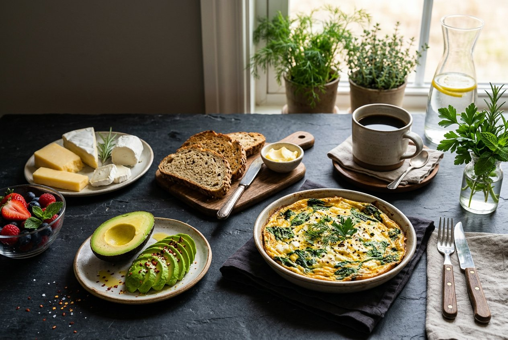
Chapitre 01
Petits-déjeuners et en-cas rapides
Commencez la journée avec des recettes pratiques et rassasiantes, sans dépendre du pain traditionnel. Ce chapitre réunit œufs, fromages, farines d'amande ou de coco et fruits en portions équilibrées. La plupart des recettes demandent au maximum 15 minutes de préparation active.
Préparation 10 minTotal 30 minRendement 2Difficulté facile
385kcal / portion6 gglucides27 gprotéines28 gmatières grasses
Ingrédients
- 4 œufs
- 1 tasse d'épinards hachés (frais ou surgelés, pressés)
- 50 g de mozzarella râpée
- 2 c. à soupe de crème liquide
- 1/2 oignon haché
- 1 c. à soupe d'huile d'olive
- sel, poivre noir et noix de muscade selon le goût
Préparation
- Faites revenir l'oignon dans l'huile d'olive pendant 3 minutes, ajoutez les épinards et laissez cuire jusqu'à évaporation de l'eau.
- Fouettez les œufs avec la crème liquide, le sel, le poivre et la noix de muscade.
- Mélangez la préparation sautée et le fromage avec les œufs.
- Versez dans un petit plat à four graissé et enfournez à 180 °C pendant 20 à 25 minutes, jusqu'à ce que le centre soit pris.
CONSEIL DE CUISINE : Préparez-en deux à la fois : le second se conserve 3 jours au réfrigérateur et devient le petit-déjeuner de demain.
↺ REMPLACEMENT INTELLIGENT : Remplacez les épinards par de la courgette râpée et pressée : même technique, goût plus neutre.
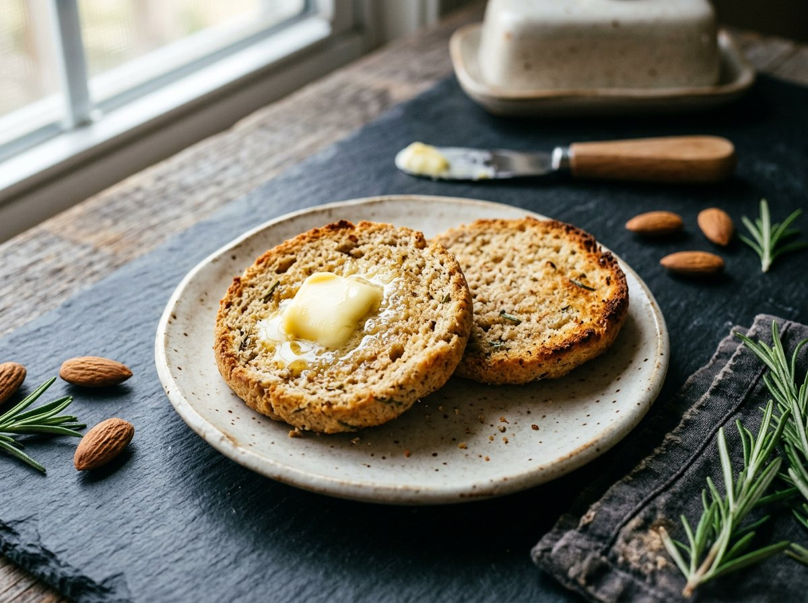
Préparation 5 minTotal 7 minRendement 1Difficulté facile
245kcal / portion4 gglucides14 gprotéines18 gmatières grasses
Ingrédients
- 1 œuf
- 2 c. à soupe de farine d'amande
- 1 c. à soupe de crème liquide
- 1/2 c. à café de levure chimique
- 1 pincée de sel
- 1/2 c. à café de beurre pour graisser
Préparation
- Mélangez le tout dans une tasse ou un moule carré graissé, à la fourchette, jusqu'à disparition des grumeaux de farine.
- Passez au micro-ondes 90 secondes à puissance maximale.
- Démoulez, coupez en deux et faites dorer à la poêle ou au grille-pain 1 minute de chaque côté.
CONSEIL DE CUISINE : Il n'est bon que si vous le faites dorer ensuite : le micro-ondes cuit, mais ne donne ni couleur ni texture de pain.
↺ REMPLACEMENT INTELLIGENT : Pas de farine d'amande ? Utilisez 1 c. à soupe de farine de lin doré et 1 de farine de coco.
Préparation 8 minTotal 15 minRendement 2Difficulté facile
260kcal / portion22 gglucides15 gprotéines12 gmatières grasses
Ingrédients
- 1 banane bien mûre
- 2 œufs
- 3 c. à soupe de son d'avoine
- 1/2 c. à café de cannelle
- 1/2 c. à café de levure chimique
- 1 c. à café de beurre ou d'huile de coco
Préparation
- Écrasez la banane à la fourchette jusqu'à obtenir une purée.
- Ajoutez les œufs, l'avoine, la cannelle et la levure, puis mélangez bien.
- Faites chauffer le beurre à feu doux et versez de petites louches de pâte.
- Faites dorer 2 minutes de chaque côté, en retournant dès que des bulles apparaissent à la surface.
CONSEIL DE CUISINE : La banane doit avoir la peau tachée de brun : c'est ce qui sucre sans ajouter de sucre.
↺ REMPLACEMENT INTELLIGENT : Remplacez la banane par 1/2 pomme râpée et 1 c. à café d'édulcorant pour réduire encore les glucides.
Préparation 15 minTotal 35 minRendement 6Difficulté facile
180kcal / portion3 gglucides12 gprotéines13 gmatières grasses
Ingrédients
- 6 œufs
- 1/2 tasse de lard fumé en dés
- 1/2 courgette râpée et pressée
- 1/2 tasse de fromage râpé
- 2 c. à soupe de ciboulette ciselée
- sel et poivre selon le goût
Préparation
- Faites dorer le lard fumé et égouttez-le sur du papier absorbant.
- Râpez la courgette, salez-la, attendez 5 minutes puis pressez-la bien entre vos mains.
- Fouettez les œufs, mélangez tous les ingrédients et répartissez dans des moules à muffins.
- Enfournez à 180 °C pendant 20 à 25 minutes, jusqu'à ce que le centre soit ferme.
CONSEIL DE CUISINE : Congelez-les dans un sac de congélation et réchauffez 30 secondes au micro-ondes : le petit-déjeuner est prêt en une demi-minute.
↺ REMPLACEMENT INTELLIGENT : Remplacez le lard fumé par du poulet effiloché pour une version moins riche en graisses saturées.
Préparation 5 minTotal 10 minRendement 1Difficulté facile
290kcal / portion14 gglucides18 gprotéines16 gmatières grasses
Ingrédients
- 1 œuf
- 1 c. à soupe rase de gomme de tapioca
- 1 c. à soupe de fromage frais ou de crème liquide
- 2 tranches de mozzarella
- 3 fines rondelles de tomate
- origan et sel selon le goût
Préparation
- Fouettez l'œuf avec le tapioca, le fromage frais et le sel jusqu'à obtenir un mélange homogène.
- Chauffez une poêle antiadhésive à feu doux et versez la préparation.
- Laissez cuire 2 minutes, retournez, couvrez de fromage et de tomate et pliez en deux.
- Laissez encore 1 minute à couvert pour que le fromage fonde.
CONSEIL DE CUISINE : Le feu doux est le secret : à feu vif, la crêpe se dessèche et se fend au moment de la plier.
↺ REMPLACEMENT INTELLIGENT : Version sucrée : garnissez-la d'1 c. à café de beurre de cacahuète et de cannelle.
Préparation 5 minTotal 10 minRendement 1Difficulté facile
275kcal / portion6 gglucides16 gprotéines21 gmatières grasses
Ingrédients
- 1 œuf
- 2 c. à soupe de fécule de manioc aigre
- 2 c. à soupe de parmesan ou de mozzarella râpée
- 1 c. à soupe de crème liquide
- 1 pincée de sel
Préparation
- Mélangez le tout à la fourchette jusqu'à obtenir une pâte crémeuse.
- Versez dans une petite poêle antiadhésive graissée, à feu doux.
- Couvrez et laissez 4 minutes, retournez et laissez 3 minutes de plus.
- Coupez en deux et garnissez encore chaud.
CONSEIL DE CUISINE : C'est la fécule de manioc aigre (et non la douce) qui donne la texture élastique caractéristique.
↺ REMPLACEMENT INTELLIGENT : Garniture passe-partout : fromage frais et origan, ou poulet effiloché et fromage frais.
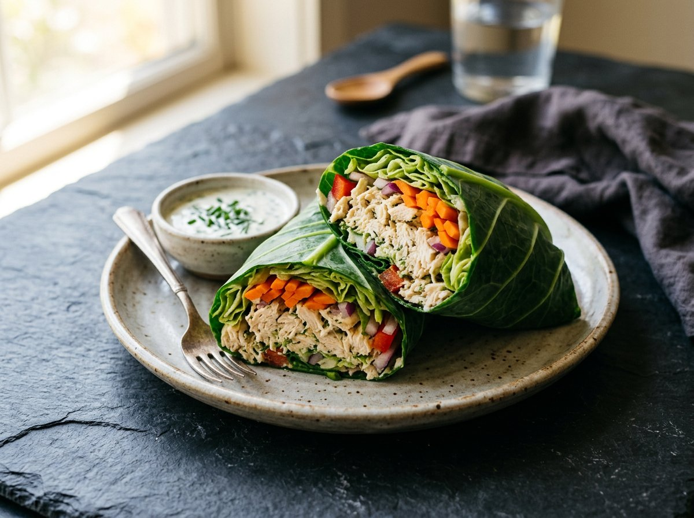
Préparation 12 minTotal 20 minRendement 2Difficulté facile
310kcal / portion9 gglucides26 gprotéines19 gmatières grasses
Ingrédients
- 4 grandes feuilles de chou vert
- 1 tasse de poulet cuit effiloché
- 3 c. à soupe de fromage frais ou de yaourt nature
- 1/2 carotte râpée
- 1/2 tasse de laitue émincée
- jus d'un quart de citron, sel et poivre
Préparation
- Plongez les feuilles de chou vert 20 secondes dans l'eau bouillante puis dans l'eau glacée : elles s'assouplissent sans cuire.
- Mélangez le poulet avec le fromage frais, le citron, le sel et le poivre.
- Assemblez sur la feuille séchée : laitue, carotte et poulet crémeux.
- Roulez serré comme un cigare, en repliant les extrémités, et coupez en deux.
CONSEIL DE CUISINE : Séchez bien le chou vert avec du papier absorbant : une feuille mouillée fait se défaire le wrap dans la main.
↺ REMPLACEMENT INTELLIGENT : Remplacez le chou vert par des feuilles de bettes crues, plus croquantes et sans besoin de choc thermique.
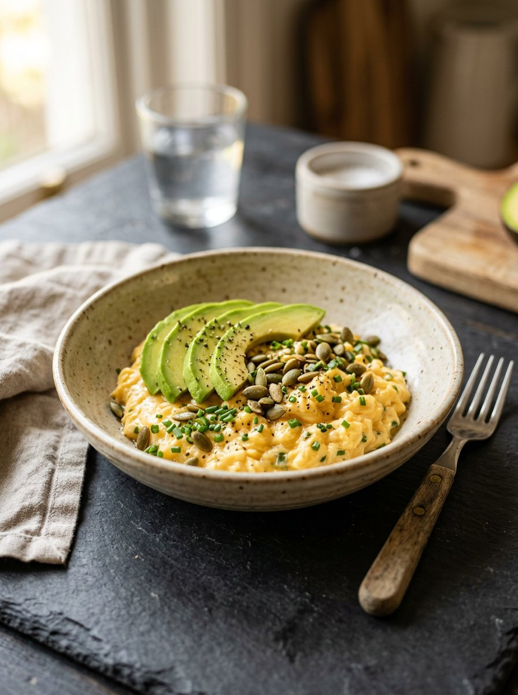
Préparation 8 minTotal 10 minRendement 1Difficulté facile
405kcal / portion8 gglucides20 gprotéines33 gmatières grasses
Ingrédients
- 2 œufs
- 1 c. à soupe de beurre
- 1/2 petit avocat en tranches
- 1 c. à soupe de graines de tournesol ou de courge
- ciboulette ciselée, sel et poivre
Préparation
- Fouettez les œufs avec le sel et le poivre sans les faire mousser.
- Faites fondre le beurre à feu doux, versez les œufs et attendez 20 secondes sans remuer.
- Ramenez la spatule du centre vers les bords, en répétant le geste jusqu'à une texture crémeuse et encore humide.
- Servez immédiatement avec l'avocat dessus, les graines et la ciboulette.
CONSEIL DE CUISINE : Retirez du feu quand ils paraissent encore trop crus : la chaleur de la poêle termine la cuisson.
↺ REMPLACEMENT INTELLIGENT : Pas d'avocat ? Utilisez 2 c. à soupe de crème aigre avec du citron.
Préparation 5 minTotal 5 minRendement 1Difficulté facile
320kcal / portion10 gglucides22 gprotéines22 gmatières grasses
Ingrédients
- 170 g de yaourt nature entier
- 1/3 tasse de mélange de fruits secs concassés (Brésil, cajou, amande)
- 1 c. à soupe de copeaux de coco sans sucre
- 1/2 c. à café de cannelle
- 1 c. à café d'édulcorant ou de miel (facultatif)
- 5 fraises coupées en dés
Préparation
- Faites torréfier les fruits secs et les copeaux de coco dans une poêle sèche pendant 2 minutes, en remuant sans cesse.
- Versez le yaourt dans un bol et couvrez-le de fraises.
- Étalez le granola tiède dessus et saupoudrez de cannelle.
- Ne sucrez que si c'est nécessaire : la cannelle trompe déjà le palais.
CONSEIL DE CUISINE : Ne faites jamais torréfier le granola près du téléphone : les fruits secs brûlent en 30 secondes et donnent de l'amertume.
↺ REMPLACEMENT INTELLIGENT : Granola en quantité : triplez la recette et conservez-le 15 jours dans un bocal fermé.
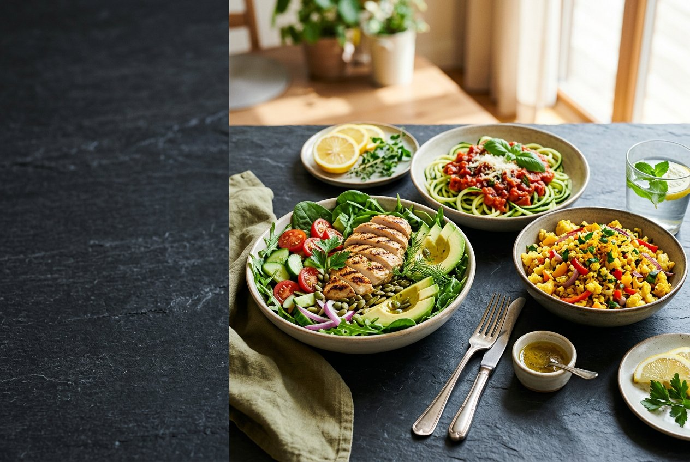
Chapitre 02
Déjeuners complets
Des plats préparés dans une seule casserole, des salades qui tiennent toute l'après-midi et des alternatives intelligentes au riz et aux pâtes — sans goût de régime.
10
Riz de chou-fleur simple
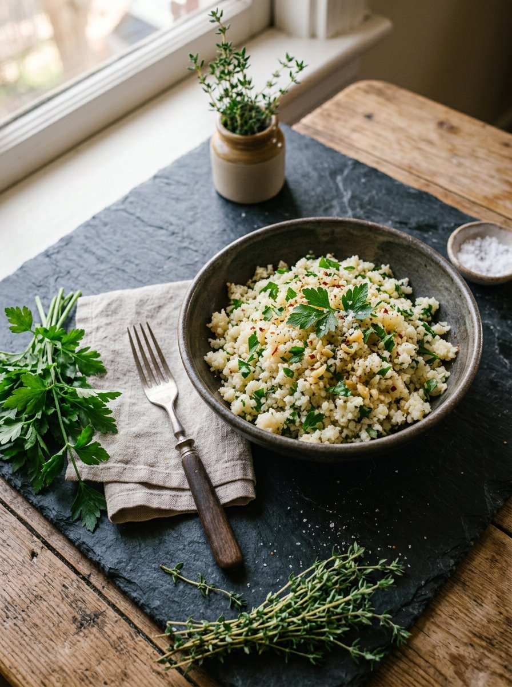
Préparation 10 minTotal 15 minRendement 4Difficulté facile
65kcal / portion5 gglucides4 gprotéines3 gmatières grasses
Ingrédients
- 1 chou-fleur moyen en bouquets
- 1 c. à soupe d'huile d'olive
- 2 gousses d'ail hachées
- 1/4 d'oignon haché
- sel et herbes fraîches
Préparation
- Mixez le chou-fleur cru par brèves impulsions jusqu'à obtenir des grains de la taille du riz (ou râpez-le avec la face la plus grosse).
- Faites revenir l'ail et l'oignon dans l'huile d'olive pendant 2 minutes.
- Ajoutez le chou-fleur et faites-le sauter à feu vif 5 à 6 minutes en remuant.
- Salez et terminez avec les herbes fraîches : ne couvrez pas, sinon il se transforme en purée.
CONSEIL DE CUISINE : Ne mixez jamais le chou-fleur cuit : il rend de l'eau et devient une bouillie. Toujours cru et par brèves impulsions.
↺ REMPLACEMENT INTELLIGENT : Base neutre : elle se conserve 4 jours au réfrigérateur et accepte n'importe quel reste de protéine dessus.
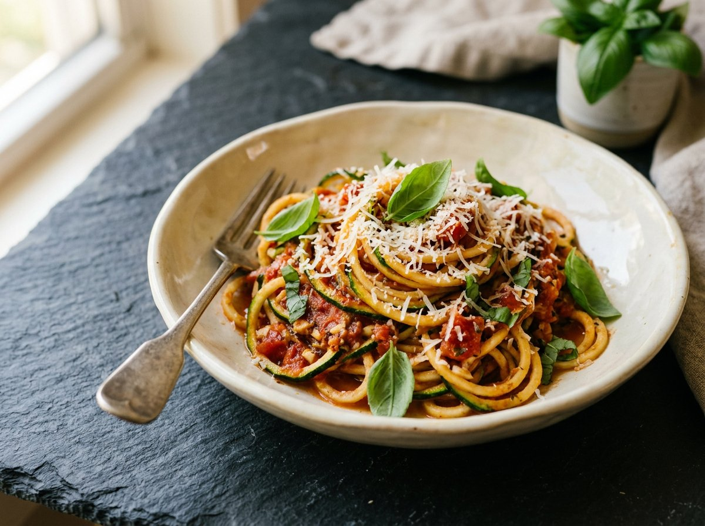
Préparation 12 minTotal 30 minRendement 2Difficulté facile
265kcal / portion14 gglucides12 gprotéines18 gmatières grasses
Ingrédients
- 2 grandes courgettes
- 6 tomates mûres (ou 1 boîte de tomates pelées)
- 2 gousses d'ail
- 1/2 oignon
- 1 c. à soupe d'huile d'olive
- basilic, sel et poivre
- parmesan râpé pour terminer
Préparation
- Préparez la sauce : faites revenir oignon et ail, ajoutez la tomate hachée et laissez cuire 20 minutes à feu doux jusqu'à épaississement.
- Coupez la courgette en fines lamelles à l'économe ou au spiraliseur.
- Faites sauter la courgette 90 secondes dans l'huile chaude : juste pour la tiédir, jamais pour la cuire.
- Ajoutez la sauce, mélangez rapidement et terminez avec basilic et parmesan.
CONSEIL DE CUISINE : Salez la courgette déjà spiralée, laissez-la 10 minutes dans la passoire et séchez-la au papier : vous éliminez l'eau qui détrempe la sauce.
↺ REMPLACEMENT INTELLIGENT : Remplacez la tomate pelée par une sauce au chou-fleur mixé avec du parmesan, encore plus pauvre en glucides.
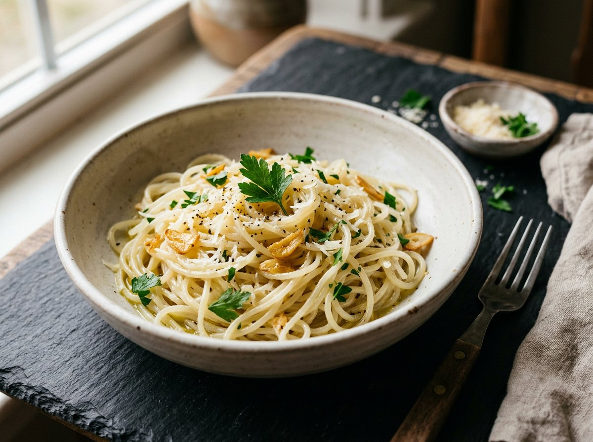
Préparation 10 minTotal 20 minRendement 2Difficulté facile
210kcal / portion7 gglucides8 gprotéines17 gmatières grasses
Ingrédients
- 1 bocal de cœurs de palmier en lamelles (ou spaghettis de konjac)
- 4 gousses d'ail en lamelles
- 3 c. à soupe d'huile d'olive
- 1/4 tasse de parmesan râpé
- persil, poivre noir et sel
Préparation
- Égouttez les cœurs de palmier et séchez-les bien avec du papier absorbant.
- Chauffez l'huile d'olive à feu doux et faites dorer l'ail en lamelles sans le brûler.
- Ajoutez les cœurs de palmier et faites sauter 3 minutes à feu moyen-vif pour évaporer l'eau.
- Éteignez le feu, mélangez le parmesan, le persil et le poivre, et servez immédiatement.
CONSEIL DE CUISINE : Les cœurs de palmier et le konjac rendent beaucoup d'eau : bien les sécher avant de les sauter évite un plat détrempé.
↺ REMPLACEMENT INTELLIGENT : Ajoutez 1 tasse de crevettes sautées pour en faire un plat principal complet.
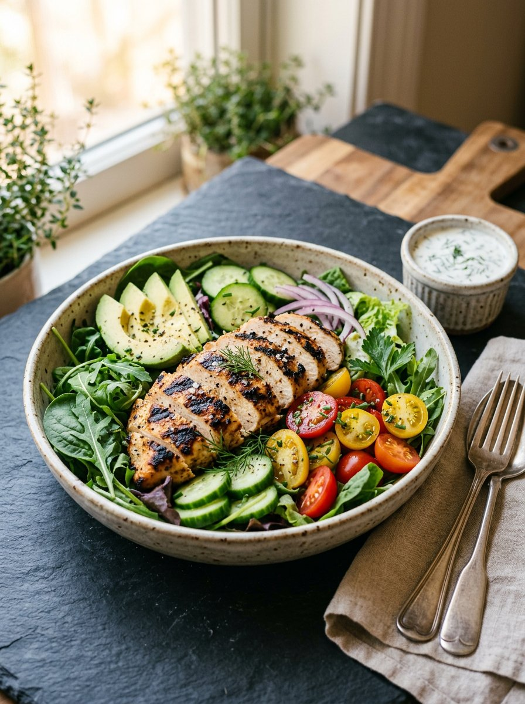
Préparation 15 minTotal 25 minRendement 2Difficulté facile
340kcal / portion12 gglucides32 gprotéines18 gmatières grasses
Ingrédients
- 1 blanc de poulet grillé en lamelles
- 4 tasses de salade variée
- 1/2 concombre en rondelles
- 1 tomate en quartiers
- 1/4 d'avocat
- 170 g de yaourt nature
- 1 c. à café de moutarde, jus d'un demi-citron, huile d'olive, sel et herbes
Préparation
- Assaisonnez le poulet avec sel, poivre et paprika et faites-le griller 5 minutes de chaque côté.
- Répartissez la salade, le concombre, la tomate et l'avocat dans deux bols.
- Mélangez le yaourt avec la moutarde, le citron, 1 c. à soupe d'huile d'olive, le sel et les herbes.
- Couvrez avec le poulet tiède et nappez de sauce au moment de manger.
CONSEIL DE CUISINE : Une salade avec la sauce à part se conserve 2 jours en boîte ; avec la sauce dessus, elle flétrit en 3 heures.
↺ REMPLACEMENT INTELLIGENT : Remplacez le poulet par du thon ou des pois chiches cuits (augmentez la portion et comptez les glucides).
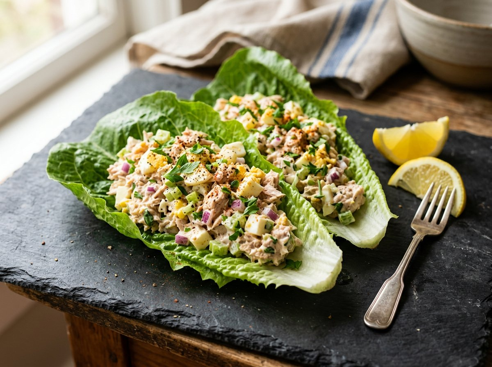
Préparation 12 minTotal 20 minRendement 2Difficulté facile
375kcal / portion6 gglucides28 gprotéines27 gmatières grasses
Ingrédients
- 2 boîtes de thon au naturel égoutté
- 2 œufs durs hachés
- 1/2 tasse de céleri haché
- 1/4 d'oignon rouge haché
- 3 c. à soupe de mayonnaise
- jus d'un demi-citron
- 1 c. à café de moutarde, sel, poivre et persil
Préparation
- Mélangez la mayonnaise avec le citron, la moutarde, le sel et le poivre.
- Ajoutez le thon, l'œuf, le céleri et l'oignon, et incorporez délicatement.
- Terminez avec le persil et rectifiez l'assaisonnement en sel.
- Servez sur de la salade, en wrap de chou vert ou en garnissant une tomate.
CONSEIL DE CUISINE : Le céleri est ce qui donne le croquant : sans lui, la salade devient pâteuse.
↺ REMPLACEMENT INTELLIGENT : Version à emporter : assemblez dans un bocal en verre avec la salade au fond et la préparation dessus.
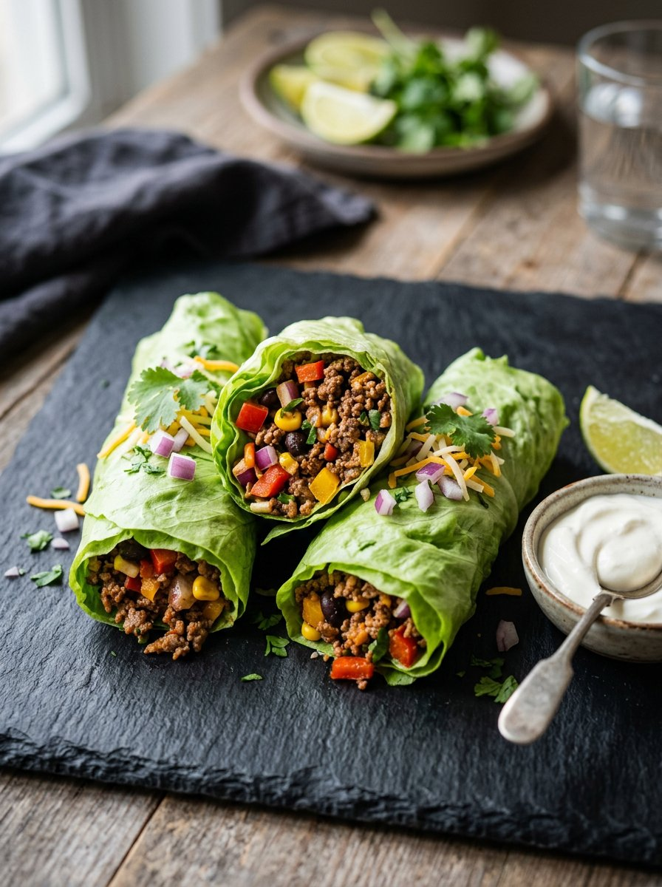
Préparation 15 minTotal 25 minRendement 3Difficulté facile
320kcal / portion8 gglucides26 gprotéines21 gmatières grasses
Ingrédients
- 1 laitue iceberg (feuilles entières)
- 500 g de bœuf haché
- 1 oignon haché
- 2 gousses d'ail
- 1 petit poivron haché
- 2 c. à soupe de sauce tomate
- paprika fumé, cumin, poivre et sel
- fromage râpé et crème aigre pour servir
Préparation
- Faites revenir l'oignon, l'ail et le poivron pendant 4 minutes.
- Ajoutez le bœuf haché et faites-le bien dorer en cassant les morceaux avec la spatule.
- Incorporez la sauce tomate et les épices, et laissez cuire 8 minutes jusqu'à évaporation du liquide.
- Servez dans les feuilles de laitue avec fromage et crème aigre.
CONSEIL DE CUISINE : Séchez les feuilles de laitue avec du papier absorbant : une feuille mouillée se déchire au moment de rouler.
↺ REMPLACEMENT INTELLIGENT : Pas de bœuf haché ? Utilisez du poulet effiloché avec les mêmes épices.
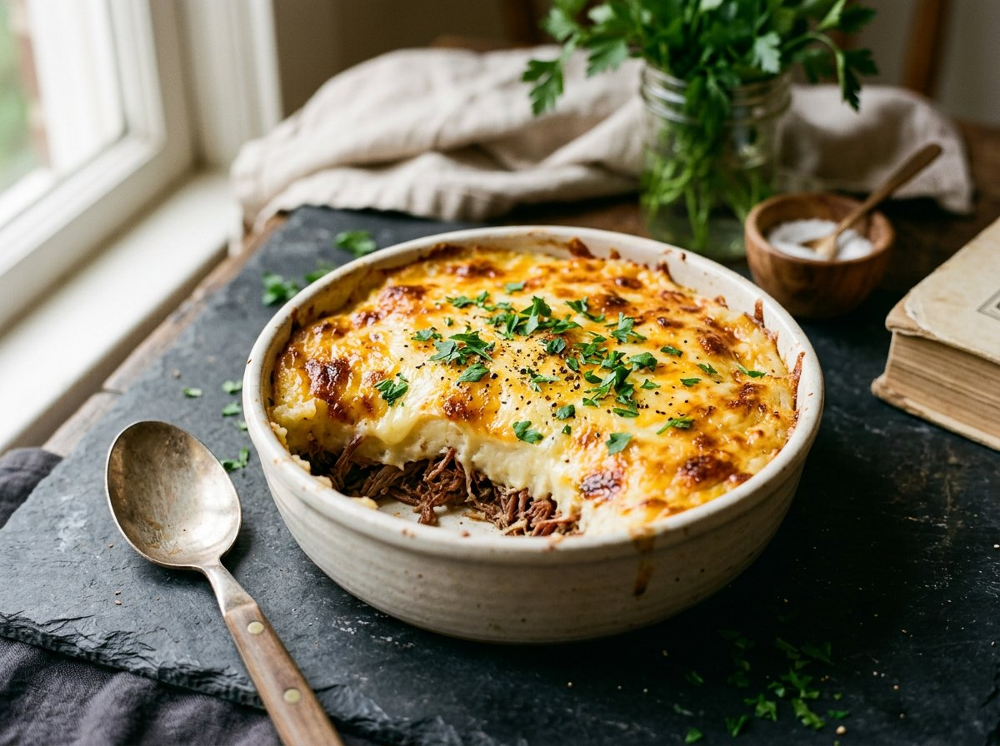
Préparation 25 minTotal 60 minRendement 6Difficulté facile
390kcal / portion13 gglucides28 gprotéines25 gmatières grasses
Ingrédients
- 1 grand chou-fleur
- 400 g de viande séchée dessalée et effilochée
- 2 c. à soupe de fromage frais
- 2 c. à soupe de beurre
- 1 oignon haché
- 3 gousses d'ail
- 100 g de mozzarella râpée
- herbes fraîches
Préparation
- Faites cuire le chou-fleur à la vapeur jusqu'à tendreté et mixez-le avec le beurre et le fromage frais pour obtenir une purée lisse.
- Faites revenir l'oignon et l'ail, ajoutez la viande séchée effilochée et laissez sauter 5 minutes.
- Assemblez dans un plat à four : la viande au fond, la purée dessus et la mozzarella pour finir.
- Enfournez à 200 °C pendant 20 minutes, jusqu'à ce que ce soit gratiné.
CONSEIL DE CUISINE : Égouttez bien le chou-fleur cuit avant de le mixer : l'excès d'eau rend la purée liquide.
↺ REMPLACEMENT INTELLIGENT : Pas de viande séchée ? Utilisez du bœuf haché sauté avec du poivron, ou du poulet effiloché.
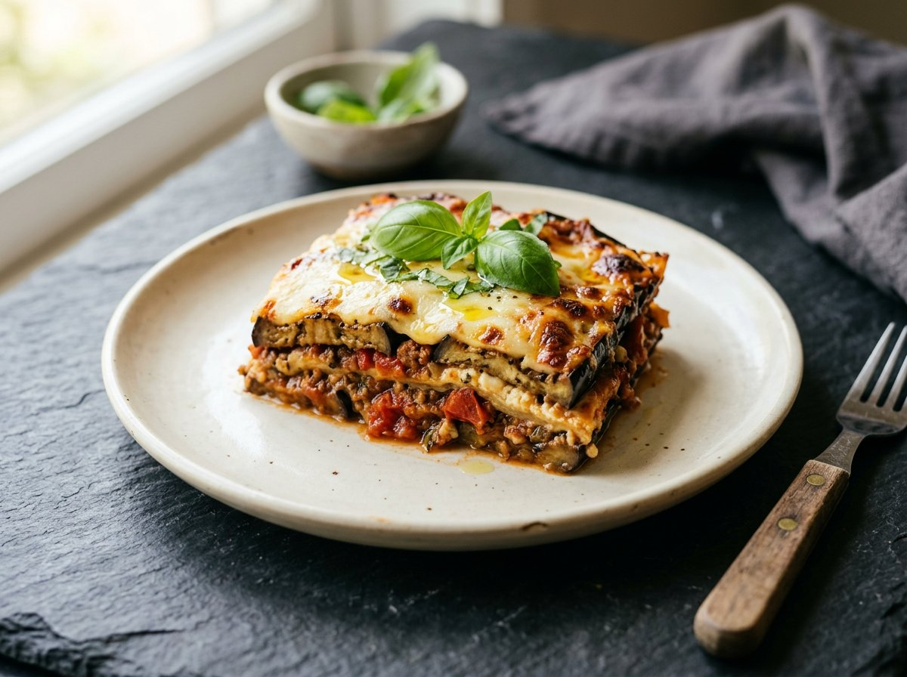
Préparation 30 minTotal 75 minRendement 6Difficulté facile
355kcal / portion12 gglucides30 gprotéines22 gmatières grasses
Ingrédients
- 2 grandes aubergines en fines tranches
- 500 g de bœuf haché
- 1 boîte de tomates pelées
- 1 oignon et 3 gousses d'ail
- 200 g de mozzarella en tranches
- 100 g de parmesan râpé
- huile d'olive, origan, sel et poivre
Préparation
- Salez les tranches d'aubergine, laissez-les 20 minutes, rincez-les et séchez-les bien.
- Faites-les griller dans une poêle chaude avec un filet d'huile d'olive, 2 minutes de chaque côté.
- Préparez la sauce : faites revenir oignon et ail, ajoutez le bœuf haché, faites dorer, incorporez la tomate et laissez cuire 25 minutes.
- Assemblez par couches — sauce, aubergine, mozzarella — en terminant par la sauce et le parmesan. Enfournez à 190 °C pendant 35 minutes.
CONSEIL DE CUISINE : Sécher l'aubergine est indispensable : sans cela, les lasagnes rendent de l'eau et deviennent une soupe dans le plat.
↺ REMPLACEMENT INTELLIGENT : Remplacez l'aubergine par de fines tranches de courgette, en les faisant griller moins longtemps.
Préparation 20 minTotal 50 minRendement 4Difficulté facile
330kcal / portion11 gglucides26 gprotéines20 gmatières grasses
Ingrédients
- 2 aubergines coupées en deux
- 400 g de bœuf haché
- 1 oignon et 2 gousses d'ail hachés
- 1 tomate hachée
- 1/2 tasse de mozzarella râpée
- 2 c. à soupe d'huile d'olive
- persil, sel, poivre et cumin
Préparation
- Retirez une partie de la chair des aubergines, hachez-la et réservez.
- Salez les moitiés et enfournez-les à 180 °C pendant 15 minutes pour les attendrir.
- Faites revenir oignon et ail, faites dorer la viande, ajoutez la chair hachée et la tomate, et laissez cuire 10 minutes.
- Garnissez les aubergines, couvrez de fromage et remettez au four 15 minutes.
CONSEIL DE CUISINE : Faites cuire les coques avant de les garnir : une aubergine crue au four reste dure dedans et brûlée dehors.
↺ REMPLACEMENT INTELLIGENT : Remplacez le bœuf haché par du thon et du fromage frais pour une version prête en 25 minutes.
Chapitre 03
Soupes et bouillons
Pour les soirées froides et les repas à emporter : une texture crémeuse sans pommes de terre ni farine de blé.
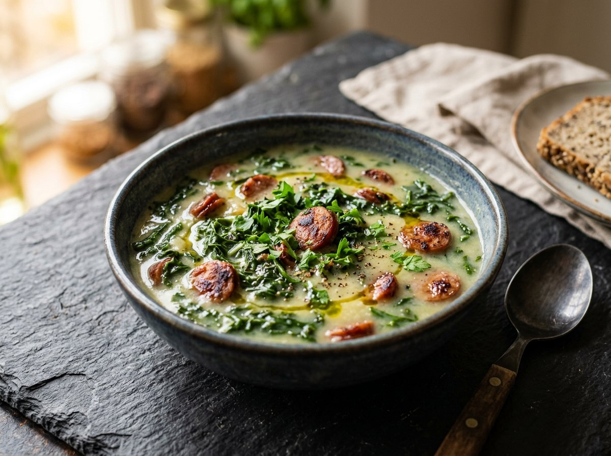
Préparation 15 minTotal 35 minRendement 4Difficulté facile
195kcal / portion9 gglucides14 gprotéines12 gmatières grasses
Ingrédients
- 1 petit chou-fleur en bouquets
- 200 g de saucisse portugaise ou de chorizo en rondelles
- 1 botte de chou vert en fines lamelles
- 1 oignon et 3 gousses d'ail
- 1 l de bouillon de poulet ou d'eau
- 2 c. à soupe d'huile d'olive, sel et poivre
Préparation
- Faites frire la saucisse dans une grande casserole jusqu'à coloration et réservez une partie de la graisse.
- Faites revenir l'oignon et l'ail dans cette graisse pendant 3 minutes.
- Ajoutez le chou-fleur et le bouillon, laissez cuire 15 minutes et mixez jusqu'à obtenir une texture crémeuse.
- Remettez dans la casserole, ajoutez le chou vert en lamelles et la saucisse, et laissez cuire 5 minutes sans trop ramollir le chou.
CONSEIL DE CUISINE : Le chou vert entre à la fin et ne cuit que 5 minutes : il doit rester d'un vert vif, pas brun.
↺ REMPLACEMENT INTELLIGENT : Version sans charcuterie : remplacez la saucisse par du poulet effiloché et ajoutez du paprika fumé.
Préparation 15 minTotal 40 minRendement 4Difficulté facile
180kcal / portion16 gglucides5 gprotéines11 gmatières grasses
Ingrédients
- 500 g de potiron kabocha en dés
- 200 ml de lait de coco sans sucre
- 1 morceau de gingembre râpé de 3 cm
- 1 oignon et 2 gousses d'ail
- 700 ml de bouillon de légumes
- 1 c. à soupe d'huile d'olive, sel, poivre et ciboulette
Préparation
- Faites revenir l'oignon, l'ail et le gingembre dans l'huile d'olive pendant 3 minutes.
- Ajoutez le potiron et le bouillon, et laissez cuire 20 minutes jusqu'à tendreté.
- Mixez avec le lait de coco jusqu'à obtenir une texture lisse.
- Rectifiez le sel, réchauffez sans faire bouillir et terminez avec la ciboulette.
CONSEIL DE CUISINE : Le potiron contient plus de glucides que les autres légumes : contrôlez la portion si vous êtes en phase d'induction.
↺ REMPLACEMENT INTELLIGENT : Remplacez le gingembre par du curry en poudre et terminez avec de la coriandre pour un profil thaï.
Préparation 20 minTotal 45 minRendement 4Difficulté facile
240kcal / portion14 gglucides24 gprotéines10 gmatières grasses
Ingrédients
- 300 g de blanc de poulet
- 1 courgette en dés
- 1 carotte en dés
- 1/2 tasse de haricots verts émincés
- 1 tasse de chou-fleur en bouquets
- 1 oignon, 2 gousses d'ail et 1 tomate
- 1,2 l d'eau ou de bouillon, huile d'olive, sel, laurier et persil
Préparation
- Faites cuire le poulet dans l'eau avec laurier et sel pendant 20 minutes, retirez-le et effilochez-le.
- Dans ce même bouillon, faites revenir à part l'oignon et l'ail et remettez-les dans la casserole avec la tomate.
- Ajoutez la carotte et laissez cuire 8 minutes ; puis la courgette, les haricots verts et le chou-fleur pendant 8 minutes de plus.
- Incorporez le poulet effiloché, rectifiez le sel et terminez avec le persil.
CONSEIL DE CUISINE : Faites cuire les légumes par ordre de fermeté : la carotte d'abord, les feuilles et la courgette à la fin.
↺ REMPLACEMENT INTELLIGENT : Congelez en bocaux de 500 ml : cela se conserve 3 mois et dépanne un dîner imprévu.
Préparation 12 minTotal 30 minRendement 3Difficulté facile
175kcal / portion8 gglucides8 gprotéines13 gmatières grasses
Ingrédients
- 3 grandes courgettes en rondelles
- 100 g de fromage frais
- 1 oignon et 2 gousses d'ail
- 600 ml de bouillon de légumes
- 2 c. à soupe d'huile d'olive
- sel, poivre blanc et noix de muscade
- grattons de porc ou croûtons low carb pour servir
Préparation
- Faites revenir l'oignon et l'ail dans l'huile d'olive jusqu'à coloration.
- Ajoutez la courgette et le bouillon, et laissez cuire 15 minutes.
- Mixez avec le fromage frais jusqu'à obtenir une texture veloutée.
- Remettez dans la casserole, assaisonnez de poivre blanc et de noix de muscade et réchauffez sans faire bouillir.
CONSEIL DE CUISINE : Le fromage frais s'ajoute toujours feu éteint ou doux : faire bouillir le ferait tourner et se séparer.
↺ REMPLACEMENT INTELLIGENT : Remplacez le fromage frais par 100 ml de crème liquide pour une version plus légère.
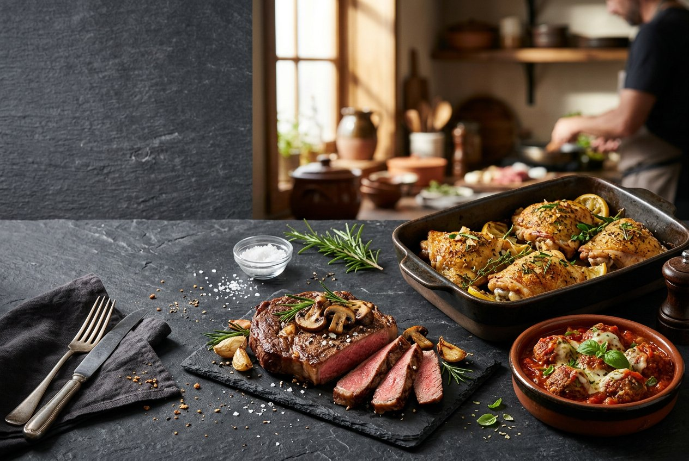
Chapitre 04
Viandes et volailles
Les protéines sont la base d'une bonne alimentation low carb : dorées, juteuses et accompagnées de vraies sauces — jamais un poulet sec de meal prep.
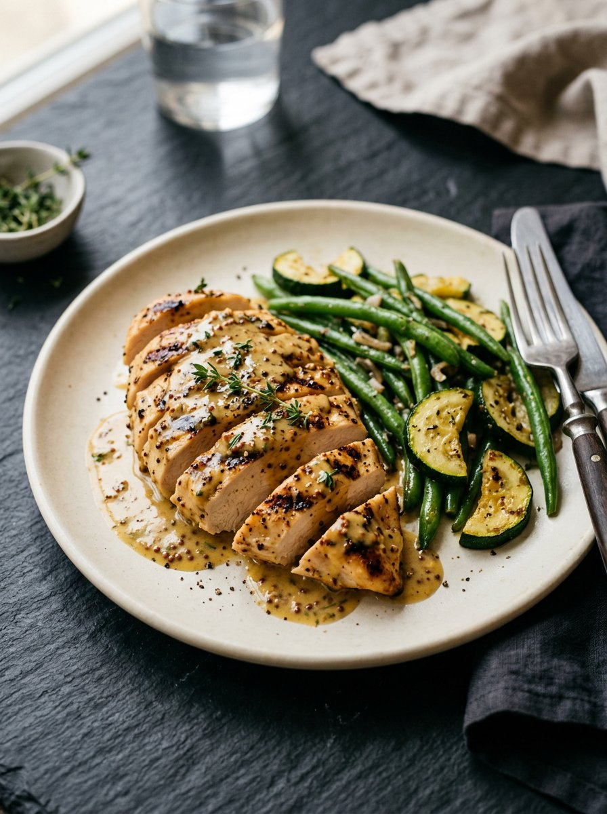
Préparation 12 minTotal 25 minRendement 2Difficulté facile
385kcal / portion5 gglucides38 gprotéines24 gmatières grasses
Ingrédients
- 2 filets de blanc de poulet (150 g chacun)
- 2 c. à soupe de moutarde de Dijon
- 100 ml de crème liquide entière
- 1 gousse d'ail hachée
- 1 c. à soupe de beurre
- 1 c. à café de thym
- sel et poivre noir
Préparation
- Assaisonnez les filets de sel et poivre et saisissez-les dans une poêle bien chaude, 4 minutes de chaque côté. Réservez.
- Dans la même poêle, faites fondre le beurre et faites revenir l'ail 30 secondes.
- Ajoutez la moutarde, la crème liquide et le thym, et laissez réduire 3 minutes jusqu'à épaississement.
- Remettez le poulet dans la poêle, nappez-le de sauce et servez avec des légumes sautés.
CONSEIL DE CUISINE : Ne lavez pas la poêle entre le poulet et la sauce : les sucs dorés sont ce qui donne le goût à la base de la crème.
↺ REMPLACEMENT INTELLIGENT : Pas de moutarde de Dijon ? Utilisez de la moutarde douce avec 1/2 c. à café de miel ou d'édulcorant pour équilibrer l'acidité.
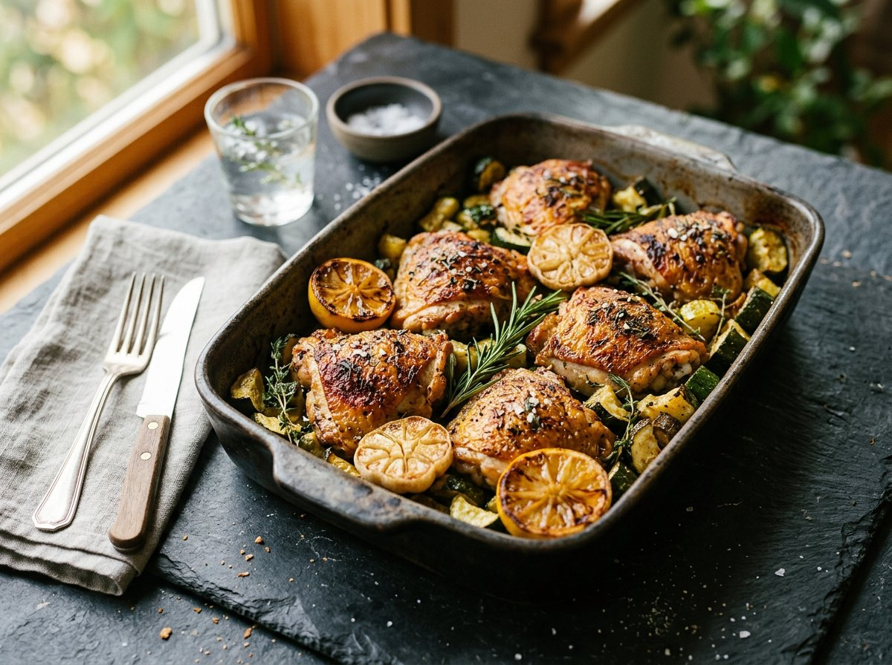
Préparation 10 minTotal 50 minRendement 4Difficulté facile
410kcal / portion3 gglucides36 gprotéines28 gmatières grasses
Ingrédients
- 8 hauts de cuisses de poulet avec la peau
- jus et zeste d'un citron
- 4 branches de romarin
- 4 gousses d'ail écrasées
- 3 c. à soupe d'huile d'olive
- gros sel et poivre noir
Préparation
- Mélangez l'huile d'olive, le jus et le zeste de citron, l'ail, le romarin, le sel et le poivre.
- Enrobez les hauts de cuisses de marinade et laissez reposer 20 minutes (ou toute une nuit).
- Déposez-les sur une plaque de cuisson côté peau vers le haut, sans les superposer.
- Enfournez à 200 °C pendant 40 à 45 minutes, jusqu'à ce que la peau soit croustillante et le jus translucide.
CONSEIL DE CUISINE : Peau vers le haut et sans superposer : c'est ainsi qu'elle devient croustillante au lieu de cuire à la vapeur.
↺ REMPLACEMENT INTELLIGENT : Ajoutez oignon et courgette sur la plaque pendant les 25 dernières minutes pour préparer l'accompagnement en même temps.
Préparation 15 minTotal 25 minRendement 3Difficulté facile
320kcal / portion10 gglucides30 gprotéines18 gmatières grasses
Ingrédients
- 400 g de blanc de poulet en dés
- 1 poivron rouge et 1 vert en dés
- 1 courgette en dés
- 1/2 tasse de noix de cajou torréfiées
- 3 c. à soupe de sauce soja (ou 2 de sauce soja + eau)
- 1 gousse d'ail et 1 petit morceau de gingembre râpé
- 1 c. à soupe de fécule de maïs diluée dans 3 c. à soupe d'eau (facultatif)
Préparation
- Saisissez le poulet à feu vif avec un filet d'huile, en deux fois, jusqu'à coloration. Réservez.
- Faites revenir l'ail et le gingembre 30 secondes, ajoutez les poivrons et la courgette pendant 4 minutes.
- Remettez le poulet, versez la sauce soja et la fécule diluée, et mélangez jusqu'à ce que la sauce enrobe le tout.
- Terminez avec les noix de cajou hors du feu pour qu'elles restent croquantes.
CONSEIL DE CUISINE : La sauce soja contient du sodium et un peu de glucides : prenez la version allégée en sel et comptez 1 g de glucide par cuillerée.
↺ REMPLACEMENT INTELLIGENT : Pas de noix de cajou ? Utilisez des cacahuètes torréfiées sans peau : moins chères et tout aussi croquantes.
Préparation 12 minTotal 30 minRendement 2Difficulté facile
430kcal / portion7 gglucides38 gprotéines28 gmatières grasses
Ingrédients
- 2 pavés épais de filet mignon ou de rumsteck
- 200 g de champignons de Paris ou shimeji
- 150 ml de crème liquide entière
- 1/4 tasse de bouillon de bœuf
- 1 c. à soupe de beurre
- 1 gousse d'ail et du thym frais
- sel et poivre noir
Préparation
- Assaisonnez la viande de sel et poivre et saisissez-la dans une poêle très chaude, 3 minutes de chaque côté. Réservez.
- Dans la même casserole, faites fondre le beurre et faites sauter les champignons jusqu'à coloration et évaporation de l'eau.
- Ajoutez l'ail, le bouillon et la crème liquide, et laissez réduire 5 minutes.
- Remettez la viande, réchauffez 1 minute et servez nappé de sauce.
CONSEIL DE CUISINE : N'entassez pas les champignons dans la poêle : en surnombre, ils rendent de l'eau et cuisent au lieu de dorer.
↺ REMPLACEMENT INTELLIGENT : Version sans crème : utilisez 2 c. à soupe de fromage frais dilué dans le bouillon chaud.
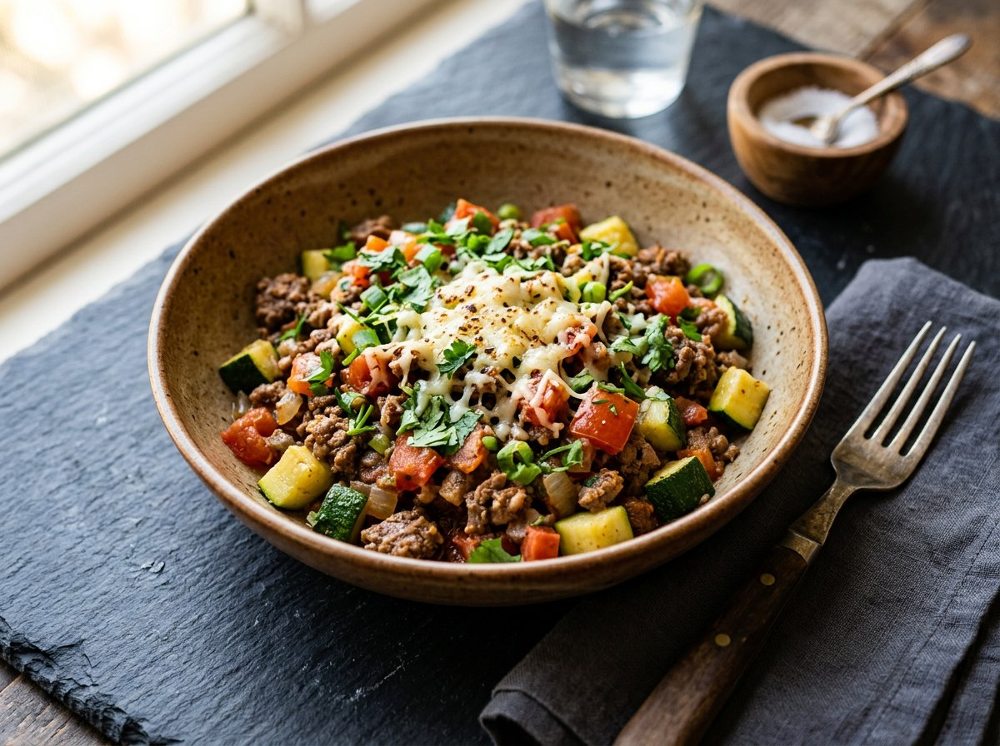
Préparation 15 minTotal 30 minRendement 4Difficulté facile
310kcal / portion9 gglucides27 gprotéines19 gmatières grasses
Ingrédients
- 500 g de bœuf haché (gîte ou collier)
- 2 courgettes en dés
- 1 boîte de tomates pelées
- 1 oignon et 3 gousses d'ail
- 1 c. à soupe d'huile d'olive
- origan, cumin, sel et poivre
- herbes fraîches et fromage râpé
Préparation
- Faites revenir l'oignon et l'ail dans l'huile d'olive jusqu'à tendreté.
- Ajoutez le bœuf haché et faites-le bien dorer, sans remuer pendant les 2 premières minutes pour former une croûte.
- Incorporez la tomate pelée et les épices, et laissez cuire 10 minutes.
- Ajoutez la courgette et laissez cuire 8 minutes de plus, jusqu'à ce qu'elle soit tendre mais ferme. Terminez avec les herbes fraîches.
CONSEIL DE CUISINE : Faire dorer la viande sans remuer au début est ce qui crée les sucs foncés et le goût de plat mijoté.
↺ REMPLACEMENT INTELLIGENT : Servez-la sur du riz de chou-fleur ou en garnissant des poivrons et des courgettes.
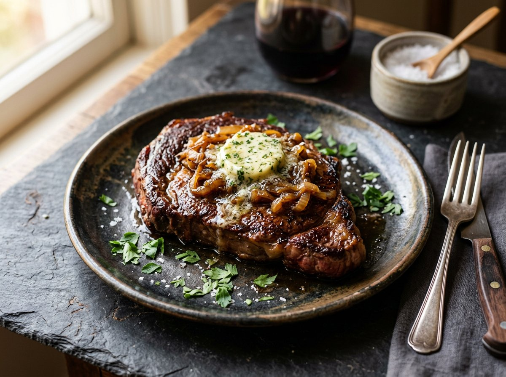
Préparation 10 minTotal 20 minRendement 2Difficulté facile
415kcal / portion5 gglucides36 gprotéines27 gmatières grasses
Ingrédients
- 2 steaks de rumsteck ou de faux-filet
- 1 grand oignon en rondelles
- 3 gousses d'ail hachées
- 2 c. à soupe de beurre
- 1 c. à soupe d'huile d'olive
- sel, poivre et persil haché
Préparation
- Assaisonnez les steaks de sel et poivre et saisissez-les dans une poêle chaude avec de l'huile d'olive, 3 minutes de chaque côté. Réservez.
- Dans la même poêle, faites dorer l'oignon à feu moyen pendant 8 minutes, jusqu'à caramélisation.
- Ajoutez le beurre et l'ail et laissez cuire 1 minute, sans brûler l'ail.
- Remettez les steaks, enrobez-les d'oignon, terminez avec le persil et servez.
CONSEIL DE CUISINE : Sortez la viande du réfrigérateur 20 minutes avant : un steak froid rend de l'eau et cuit au lieu de saisir.
↺ REMPLACEMENT INTELLIGENT : Ajoutez 1 c. à soupe de sauce soja dans l'oignon pour des sucs plus foncés et plus savoureux.
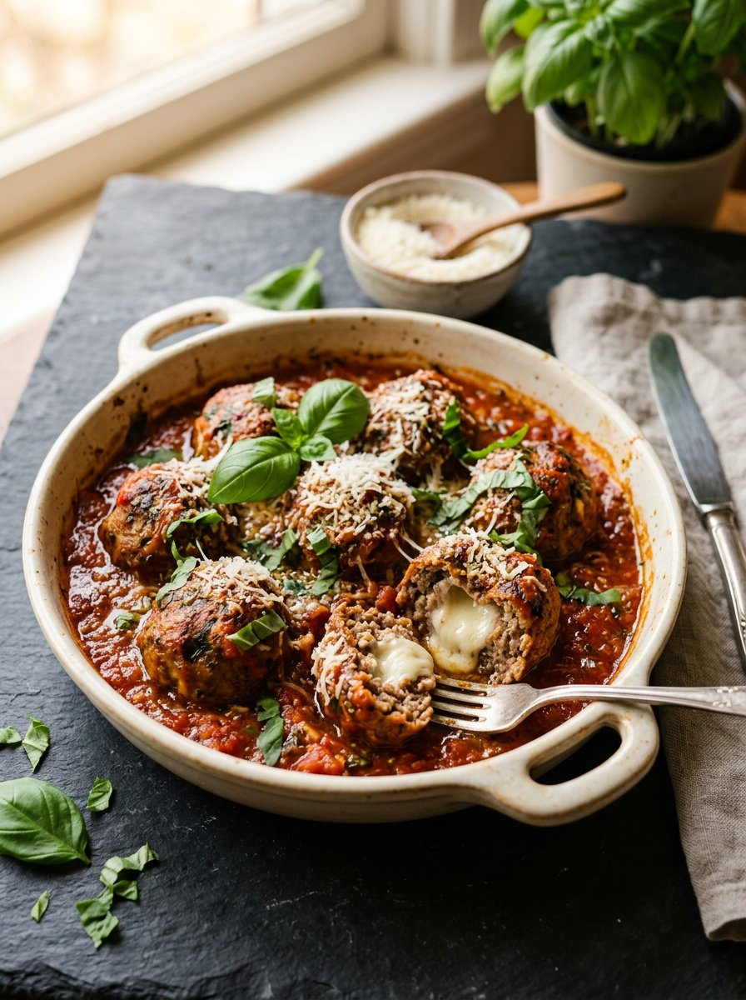
Préparation 25 minTotal 50 minRendement 4Difficulté facile
365kcal / portion8 gglucides30 gprotéines24 gmatières grasses
Ingrédients
- 500 g de bœuf haché
- 1 œuf
- 3 c. à soupe de farine d'amande
- 1 gousse d'ail râpée, persil, sel et poivre
- 100 g de mozzarella en dés pour la farce
- 1 boîte de tomates pelées
- 2 c. à soupe d'huile d'olive et basilic
Préparation
- Mélangez la viande avec l'œuf, la farine d'amande, l'ail, le persil, le sel et le poivre. Laissez reposer 10 minutes.
- Ouvrez des portions dans la paume de la main, posez un dé de fromage et refermez bien, sans laisser d'ouverture.
- Saisissez les boulettes dans une poêle avec de l'huile d'olive jusqu'à coloration sur toutes les faces.
- Couvrez de sauce tomate chaude et laissez cuire à couvert 20 minutes à feu doux.
CONSEIL DE CUISINE : Refermez la boulette en serrant bien : la moindre ouverture laisse le fromage s'échapper dans la sauce.
↺ REMPLACEMENT INTELLIGENT : La farine d'amande peut être remplacée par 2 c. à soupe de son d'avoine (comptez 2 g de glucides de plus par portion).
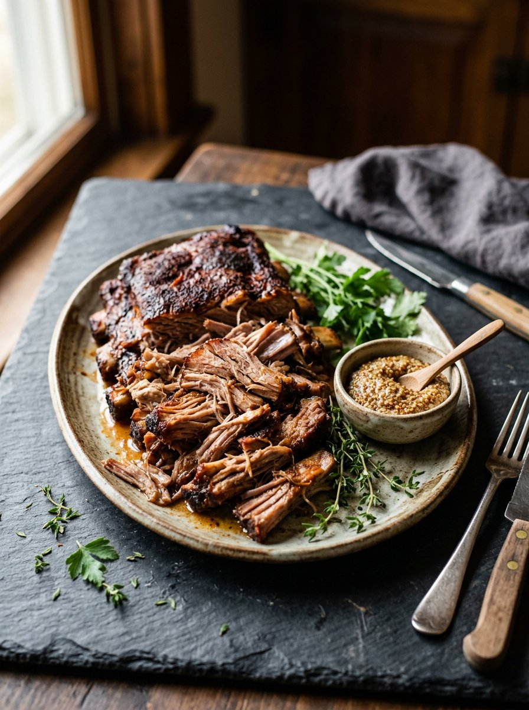
Préparation 20 minTotal 180 minRendement 6Difficulté facile
445kcal / portion6 gglucides34 gprotéines32 gmatières grasses
Ingrédients
- 1,2 kg de travers ou d'échine de porc
- 1 c. à soupe de paprika fumé
- 1 c. à café de cumin, ail en poudre, oignon en poudre
- 1 c. à soupe de vinaigre de cidre
- 2 c. à soupe de moutarde
- sel, poivre et 2 c. à soupe d'huile d'olive
Préparation
- Mélangez les épices avec le sel et le poivre et frottez-en toute la viande, avec la moutarde.
- Laissez mariner au moins 30 minutes (l'idéal : 12 heures au réfrigérateur).
- Saisissez la viande dans une casserole chaude avec de l'huile d'olive pour la dorer sur toutes les faces.
- Couvrez de papier aluminium et enfournez à 150 °C pendant 2 h 30, ou faites cuire 45 minutes en cocotte-minute. Effilochez avec deux fourchettes.
CONSEIL DE CUISINE : Température basse et cuisson longue : c'est ce qui effiloche. Le feu vif ne fait que dessécher la surface.
↺ REMPLACEMENT INTELLIGENT : Mélangez la viande effilochée avec 2 c. à soupe de fromage frais et servez dans des wraps de laitue.
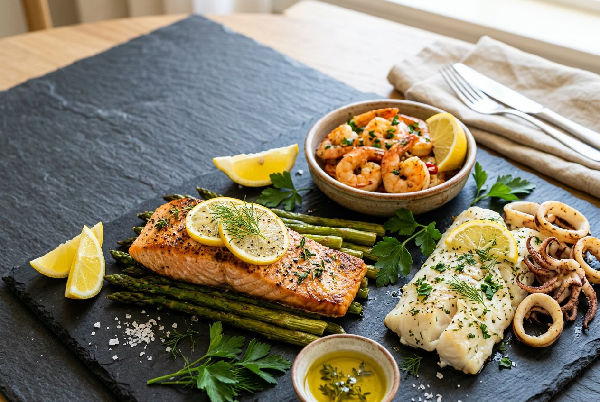
Chapitre 05
Poissons et fruits de mer
Du saumon du dimanche aux fruits de mer rapides de la semaine : de bonnes graisses, une préparation courte et un goût de restaurant.
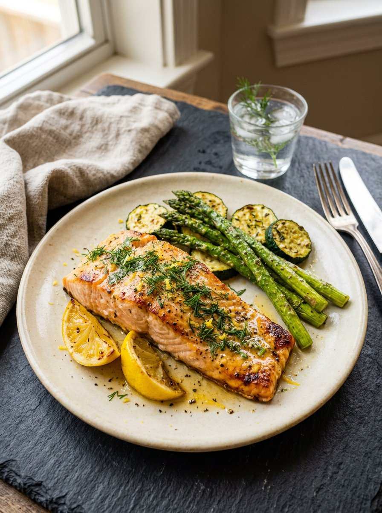
Préparation 8 minTotal 25 minRendement 2Difficulté facile
425kcal / portion3 gglucides34 gprotéines30 gmatières grasses
Ingrédients
- 2 pavés de saumon (180 g chacun)
- 2 c. à soupe de beurre fondu
- jus et zeste d'un demi-citron
- 2 gousses d'ail hachées
- 1 c. à soupe de persil ou d'aneth
- sel et poivre noir
Préparation
- Assaisonnez le saumon de sel et poivre et déposez-le dans un plat à four graissé.
- Mélangez le beurre fondu avec l'ail, le jus de citron, le zeste et le persil.
- Arrosez le poisson avec ce mélange et laissez 10 minutes.
- Enfournez à 200 °C pendant 12 à 15 minutes, jusqu'à ce que la chair devienne opaque et se détache en lamelles.
CONSEIL DE CUISINE : Le saumon est prêt quand il se détache en lamelles sous la pression de la fourchette : trop cuit, il devient sec.
↺ REMPLACEMENT INTELLIGENT : Remplacez le citron par 1 c. à soupe de moutarde de Dijon dans le beurre pour un goût plus affirmé.
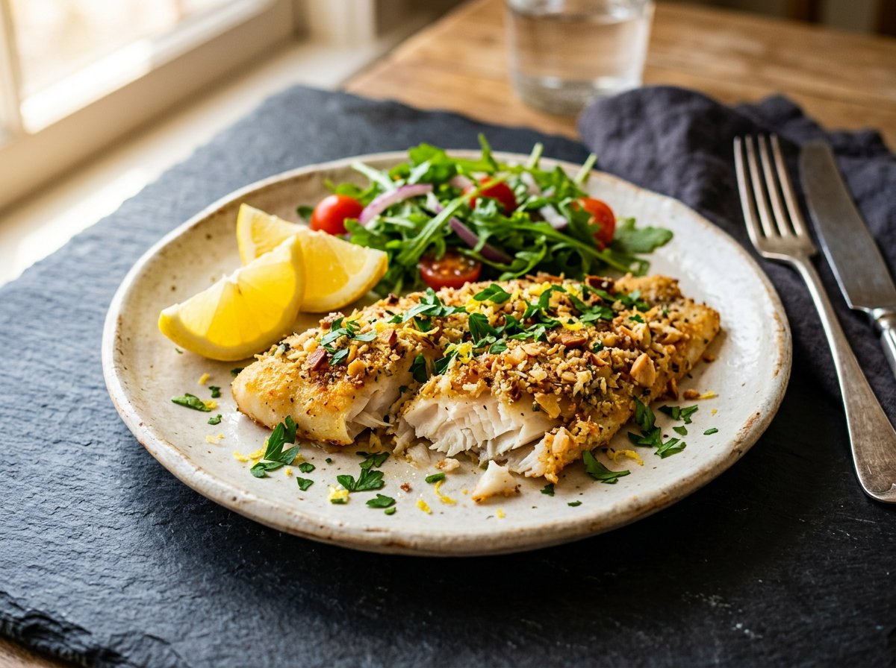
Préparation 12 minTotal 25 minRendement 2Difficulté facile
390kcal / portion5 gglucides34 gprotéines26 gmatières grasses
Ingrédients
- 2 filets de tilapia
- 1/2 tasse de farine d'amande
- 1 œuf battu
- 1/2 tasse de parmesan râpé
- 1 c. à café de paprika
- 2 c. à soupe d'huile d'olive
- sel, poivre et citron
Préparation
- Assaisonnez les filets de sel, poivre et citron, et séchez-les bien avec du papier absorbant.
- Mélangez la farine d'amande avec le parmesan et le paprika.
- Passez le filet dans l'œuf puis dans le mélange sec, en pressant pour faire adhérer.
- Enfournez à 200 °C pendant 15 minutes sur une plaque graissée, ou faites frire dans 3 c. à soupe d'huile d'olive 4 minutes de chaque côté.
CONSEIL DE CUISINE : Sécher le filet avant de le paner est ce qui empêche la croûte de se détacher à la cuisson.
↺ REMPLACEMENT INTELLIGENT : La farine d'amande est chère ? Utilisez de la farine de lin doré avec le même parmesan.
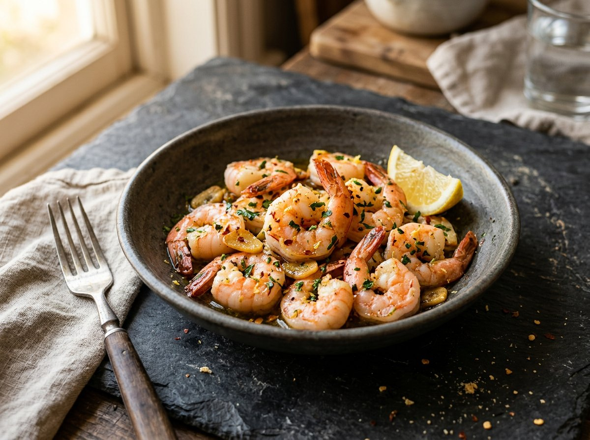
Préparation 8 minTotal 15 minRendement 2Difficulté facile
280kcal / portion4 gglucides30 gprotéines16 gmatières grasses
Ingrédients
- 400 g de crevettes décortiquées
- 5 gousses d'ail en lamelles
- 3 c. à soupe d'huile d'olive
- jus d'un demi-citron
- 1 c. à café de piment en flocons (facultatif)
- persil, sel et poivre noir
Préparation
- Séchez les crevettes avec du papier absorbant et assaisonnez-les de sel et poivre.
- Chauffez l'huile d'olive à feu moyen et faites dorer l'ail en lamelles sans le brûler.
- Montez le feu, ajoutez les crevettes et remuez 2 à 3 minutes jusqu'à ce qu'elles rosissent.
- Éteignez le feu, arrosez de citron et terminez avec le persil.
CONSEIL DE CUISINE : La crevette cuit en 2 minutes : au-delà, elle devient caoutchouteuse. Retirez-la du feu dès qu'elle rosit.
↺ REMPLACEMENT INTELLIGENT : Ajoutez 1/2 tasse de vin blanc et laissez réduire 1 minute pour une version plus raffinée.
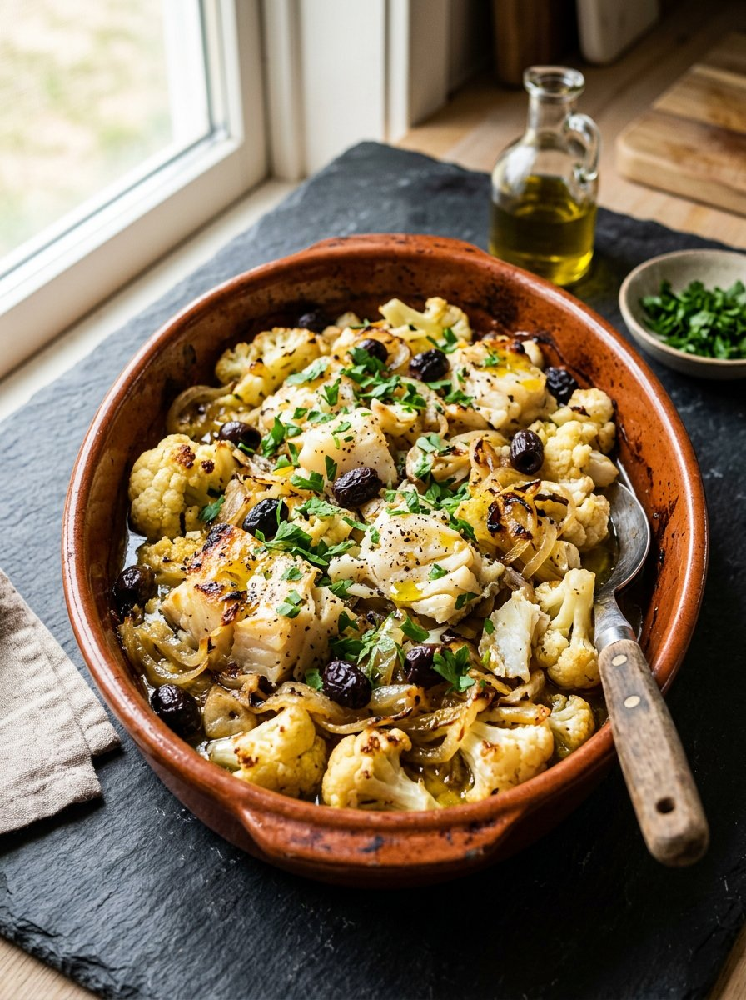
Préparation 20 minTotal 50 minRendement 4Difficulté facile
340kcal / portion10 gglucides30 gprotéines20 gmatières grasses
Ingrédients
- 500 g de cabillaud dessalé en lamelles
- 1 chou-fleur moyen en bouquets
- 1/2 tasse d'olives noires
- 1 oignon en rondelles et 4 gousses d'ail
- 1/2 tasse d'huile d'olive
- persil, poivre noir et 1 feuille de laurier
Préparation
- Faites pocher le cabillaud 5 minutes, égouttez-le et retirez peau et arêtes.
- Faites cuire le chou-fleur à la vapeur 6 minutes en le gardant ferme.
- Faites revenir l'oignon et l'ail dans la moitié de l'huile d'olive jusqu'à belle coloration.
- Assemblez dans un plat à four avec le cabillaud, le chou-fleur et les olives, arrosez du reste d'huile et enfournez à 190 °C pendant 20 minutes.
CONSEIL DE CUISINE : Dessalez le cabillaud en changeant l'eau toutes les 6 heures, pendant 24 à 48 heures au réfrigérateur.
↺ REMPLACEMENT INTELLIGENT : Pas de cabillaud ? Utilisez des lamelles de poisson blanc ferme, comme du colin ou du tilapia, salées au moment.
Préparation 20 minTotal 40 minRendement 4Difficulté facile
310kcal / portion12 gglucides28 gprotéines18 gmatières grasses
Ingrédients
- 600 g de poisson ferme en pavés (merlu, colin ou bar)
- 200 ml de lait de coco sans sucre
- 1 bocal de cœurs de palmier en rondelles
- 2 tomates et 1 poivron en rondelles
- 1 oignon en rondelles, 3 gousses d'ail
- 2 c. à soupe d'huile de dendê (ou d'huile d'olive classique)
- coriandre, citron, sel et poivre
Préparation
- Assaisonnez le poisson avec citron, sel et poivre et laissez 15 minutes.
- Dans une casserole large, faites revenir oignon et ail, et disposez des couches de tomate et de poivron.
- Déposez le poisson dessus, couvrez de lait de coco et laissez cuire à couvert 15 minutes à feu doux.
- Ajoutez les cœurs de palmier et l'huile de dendê, laissez cuire 5 minutes de plus et terminez avec la coriandre.
CONSEIL DE CUISINE : Ne remuez pas la moqueca après avoir mis le poisson : secouer la casserole défait les pavés.
↺ REMPLACEMENT INTELLIGENT : Pas d'huile de dendê ? Utilisez de l'huile d'olive classique avec 1 c. à café de paprika fumé pour la couleur.
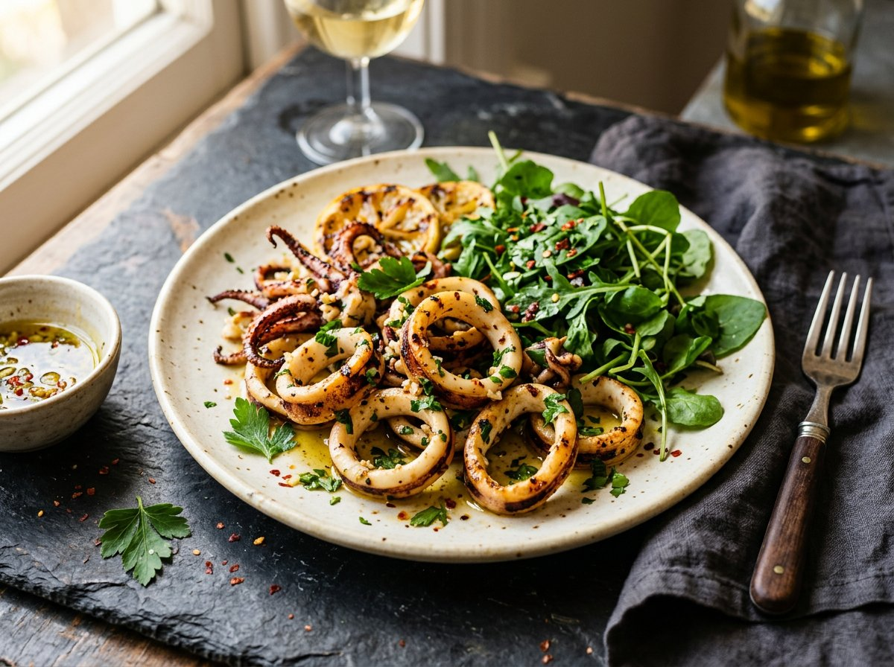
Préparation 10 minTotal 15 minRendement 2Difficulté facile
240kcal / portion5 gglucides26 gprotéines13 gmatières grasses
Ingrédients
- 500 g d'anneaux de calamar
- jus d'un citron
- 3 c. à soupe d'huile d'olive
- 2 gousses d'ail hachées
- 1 c. à soupe de persil et 1 de ciboulette
- piment en flocons, sel et poivre noir
Préparation
- Séchez très bien les anneaux de calamar avec du papier absorbant.
- Chauffez une poêle ou un gril jusqu'à ce qu'il soit très chaud, presque fumant.
- Faites griller le calamar 90 secondes de chaque côté, pas une seconde de plus.
- Assaisonnez de sel, d'ail cru, d'huile d'olive, de citron et d'herbes, et servez aussitôt.
CONSEIL DE CUISINE : Le calamar a deux fenêtres : 90 secondes, ou 40 minutes en ragoût. Entre les deux, il est caoutchouteux.
↺ REMPLACEMENT INTELLIGENT : Pas de calamar ? Utilisez des anneaux de poulpe précuit, à griller juste pour dorer.
Chapitre 06
Dîners prêts en 30 minutes
La règle du soir : le dîner est prêt avant la fin de l'épisode. Des recettes à la poêle, au four ou à la friteuse à air.
Préparation 25 minTotal 50 minRendement 2Difficulté facile
330kcal / portion12 gglucides22 gprotéines22 gmatières grasses
Ingrédients
- 1 chou-fleur moyen mixé en grains
- 1 œuf
- 80 g de mozzarella râpée
- 4 c. à soupe de farine d'amande
- 1/2 tasse de sauce tomate maison
- 150 g de mozzarella pour la garniture
- origan, basilic et sel
Préparation
- Faites cuire le chou-fleur mixé à la vapeur 5 minutes, laissez tiédir et pressez-le dans un torchon jusqu'à extraire toute l'eau.
- Mélangez le chou-fleur sec avec l'œuf, les 80 g de mozzarella, la farine d'amande et le sel.
- Étalez la pâte en disque fin sur du papier cuisson graissé et enfournez à 200 °C pendant 15 minutes.
- Couvrez de sauce, de mozzarella et d'origan et remettez au four 10 à 12 minutes. Terminez avec le basilic.
CONSEIL DE CUISINE : Presser le chou-fleur n'est pas négociable : une pâte humide ne se tient pas et la pizza se défait à la découpe.
↺ REMPLACEMENT INTELLIGENT : Congelez les disques précuits séparés par du papier cuisson et assemblez la pizza en 12 minutes.
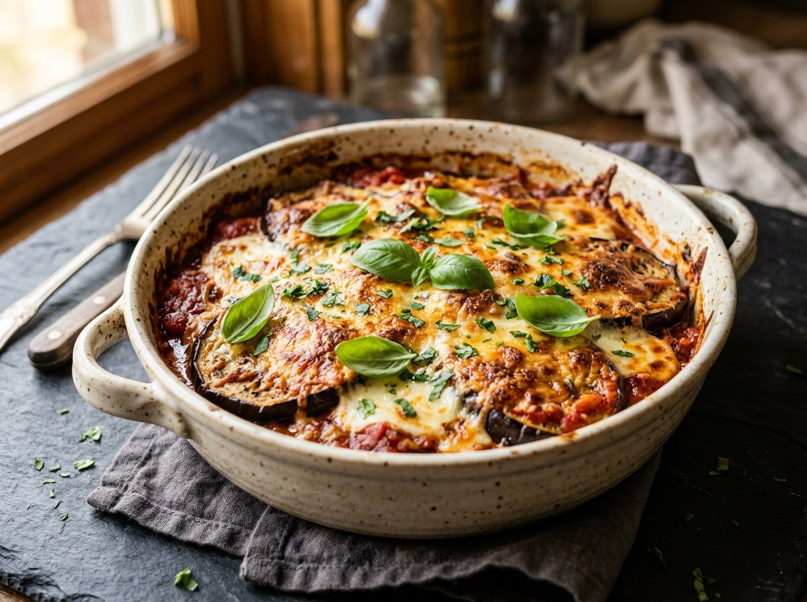
Préparation 20 minTotal 50 minRendement 4Difficulté facile
300kcal / portion14 gglucides18 gprotéines20 gmatières grasses
Ingrédients
- 2 aubergines en tranches de 1 cm
- 1 boîte de tomates pelées
- 2 gousses d'ail et 1/2 oignon
- 200 g de mozzarella râpée
- 1/2 tasse de parmesan râpé
- 3 c. à soupe d'huile d'olive, basilic, sel et poivre
Préparation
- Salez les tranches d'aubergine 20 minutes, rincez-les et séchez-les.
- Faites-les griller dans une poêle chaude avec un filet d'huile d'olive, 2 minutes de chaque côté.
- Préparez la sauce en faisant revenir oignon et ail et en laissant cuire la tomate 15 minutes.
- Assemblez par couches avec les fromages et enfournez à 190 °C pendant 25 minutes, jusqu'à gratiner.
CONSEIL DE CUISINE : Les griller avant l'assemblage évite l'aubergine spongieuse qui absorbe toute la sauce.
↺ REMPLACEMENT INTELLIGENT : Ajoutez une couche de bœuf haché entre les aubergines pour en faire un plat unique complet.
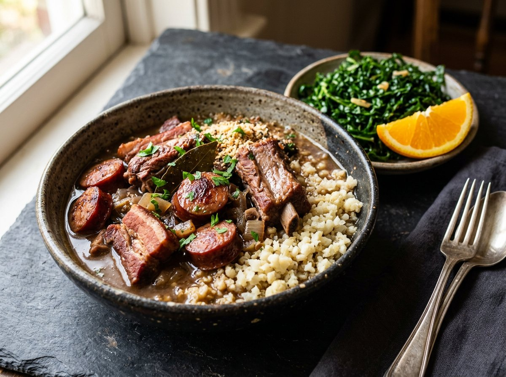
Préparation 30 minTotal 90 minRendement 6Difficulté facile
420kcal / portion8 gglucides34 gprotéines28 gmatières grasses
Ingrédients
- 500 g de viandes variées (poitrine, paio, saucisse, viande séchée)
- 1 grand chou-fleur mixé
- 200 g de lard fumé en dés
- 1 oignon, 4 gousses d'ail et 2 feuilles de laurier
- 1 c. à soupe de paprika fumé
- huile d'olive, sel et poivre
- chou vert sauté et orange pour accompagner
Préparation
- Dessalez les viandes salées pendant 12 heures en changeant l'eau.
- Faites cuire les viandes dans l'eau avec le laurier pendant 40 minutes (ou 25 en cocotte-minute) et coupez-les en morceaux.
- Faites frire le lard fumé, faites revenir l'oignon, l'ail et le paprika fumé, ajoutez les viandes et 2 tasses de bouillon, et laissez cuire 20 minutes.
- Servez sur le chou-fleur mixé sauté au beurre, avec du chou vert et de l'orange.
CONSEIL DE CUISINE : Le chou-fleur sauté dans la graisse du lard fumé est ce qui remplace la texture du haricot dans le plat.
↺ REMPLACEMENT INTELLIGENT : Version express : utilisez seulement paio, saucisse et lard fumé — prêt en 40 minutes.
Préparation 10 minTotal 25 minRendement 12Difficulté facile
130kcal / portion3 gglucides8 gprotéines9 gmatières grasses
Ingrédients
- 200 g de mozzarella râpée
- 1 œuf
- 3 c. à soupe de fécule de manioc aigre
- 2 c. à soupe de fromage frais
- 1/2 c. à café de levure chimique
- sel selon le goût
Préparation
- Faites fondre la mozzarella au micro-ondes 40 secondes et mélangez jusqu'à former une pâte.
- Ajoutez le fromage frais, l'œuf, la fécule de manioc, la levure et le sel, et pétrissez avec les mains graissées.
- Formez 12 boules et déposez-les dans le panier de la friteuse à air sans qu'elles se touchent.
- Faites cuire à 180 °C pendant 12 à 15 minutes, jusqu'à coloration.
CONSEIL DE CUISINE : Fécule de manioc aigre, pas douce : c'est l'aigre qui donne la croûte croustillante et l'intérieur élastique.
↺ REMPLACEMENT INTELLIGENT : Congelez les boules crues et faites-les cuire directement à la sortie du congélateur, en ajoutant 3 minutes.
Préparation 15 minTotal 35 minRendement 3Difficulté facile
275kcal / portion8 gglucides24 gprotéines17 gmatières grasses
Ingrédients
- 3 courgettes moyennes
- 2 boîtes de thon égoutté
- 4 c. à soupe de fromage frais
- 1/4 d'oignon haché
- 1 tomate épépinée et hachée
- 1/2 tasse de mozzarella râpée
- persil, huile d'olive, sel et poivre
Préparation
- Coupez les courgettes en deux et retirez le cœur à la cuillère, en laissant 0,5 cm de paroi.
- Mélangez le thon, le fromage frais, l'oignon, la tomate, le persil, le sel et le poivre.
- Garnissez les barquettes, arrosez d'un filet d'huile d'olive et saupoudrez de mozzarella.
- Enfournez à 190 °C pendant 22 à 25 minutes.
CONSEIL DE CUISINE : Épépinez la tomate : c'est de là que vient l'eau qui détrempe la garniture.
↺ REMPLACEMENT INTELLIGENT : Pas de thon ? Utilisez du poulet effiloché ou du bœuf haché déjà cuit.
Préparation 20 minTotal 25 minRendement 2Difficulté facile
235kcal / portion7 gglucides22 gprotéines13 gmatières grasses
Ingrédients
- 1 grand concombre japonais
- 200 g de saumon cru ou de thon en lamelles
- 3 c. à soupe de fromage frais
- 1/2 avocat en lamelles
- 1 c. à soupe de graines de sésame
- sauce soja, wasabi et ciboulette
Préparation
- Coupez le concombre en lamelles fines et longues à l'économe ou à la mandoline.
- Séchez les lamelles avec du papier absorbant et assaisonnez-les d'une pincée de sel.
- Étalez le fromage frais, posez le poisson et l'avocat et roulez comme un cigare.
- Terminez avec les graines de sésame et servez avec sauce soja et wasabi.
CONSEIL DE CUISINE : Salez les lamelles de concombre et séchez-les : un concombre gorgé d'eau se détache dans le rouleau et le défait.
↺ REMPLACEMENT INTELLIGENT : Version cuite : remplacez le poisson cru par des crevettes ou du surimi effiloché.
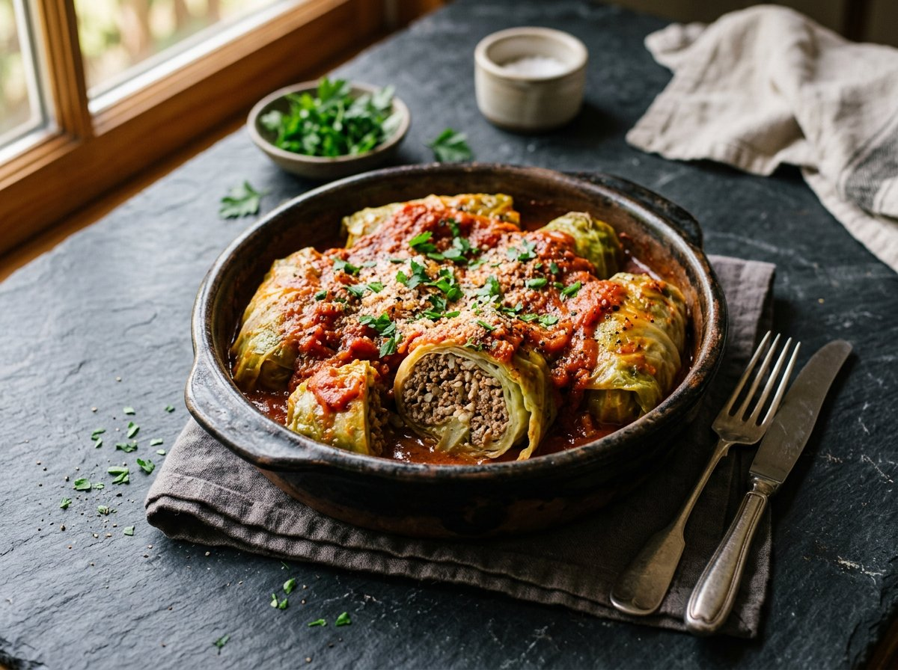
Préparation 25 minTotal 60 minRendement 4Difficulté facile
320kcal / portion12 gglucides26 gprotéines19 gmatières grasses
Ingrédients
- 1 chou moyen
- 500 g de bœuf haché
- 1/2 tasse de riz de chou-fleur cru
- 1 oignon et 3 gousses d'ail
- 1 œuf
- 1 boîte de tomates pelées
- menthe, cumin, sel et poivre
Préparation
- Faites cuire le chou entier 5 minutes dans l'eau bouillante et détachez les feuilles avec précaution.
- Mélangez la viande avec le riz de chou-fleur, l'oignon haché, l'ail, l'œuf et les épices.
- Posez 1 c. à soupe de farce sur chaque feuille, repliez les côtés et roulez serré.
- Rangez-les dans la casserole, couvrez de tomate pelée mixée et laissez cuire à couvert 35 minutes à feu doux.
CONSEIL DE CUISINE : Retirez la côte épaisse de la feuille de chou au couteau avant de rouler : le chou se referme sans se déchirer.
↺ REMPLACEMENT INTELLIGENT : Congelez les choux farcis crus séparés par du papier et faites-les cuire directement surgelés pendant 50 minutes.
Chapitre 07
Desserts sans sucre
Un vrai dessert n'a pas besoin de sucre raffiné : cacao, coco, fruits secs et édulcorants qui respectent le goût.
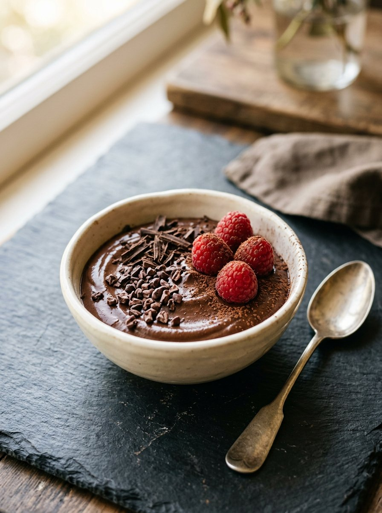
Préparation 10 minTotal 40 minRendement 4Difficulté facile
265kcal / portion12 gglucides6 gprotéines22 gmatières grasses
Ingrédients
- 1 grand avocat mûr
- 3 c. à soupe de cacao en poudre 100 %
- 200 ml de crème liquide entière
- 3 c. à soupe d'édulcorant en poudre (érythritol ou xylitol)
- 1 c. à café d'extrait de vanille
- 1 pincée de sel
Préparation
- Mixez l'avocat avec le cacao, l'édulcorant, la vanille et le sel jusqu'à obtenir une texture parfaitement lisse, sans grumeaux.
- Fouettez la crème liquide en chantilly ferme.
- Incorporez la chantilly au mélange chocolaté en trois fois, en soulevant de bas en haut.
- Réfrigérez au moins 30 minutes avant de servir.
CONSEIL DE CUISINE : L'avocat doit être bien mûr : un avocat vert et ferme laisse un goût végétal et des grumeaux.
↺ REMPLACEMENT INTELLIGENT : Pas d'avocat ? Utilisez 1 tasse de crème liquide fouettée avec le cacao et l'édulcorant, sans le fruit.
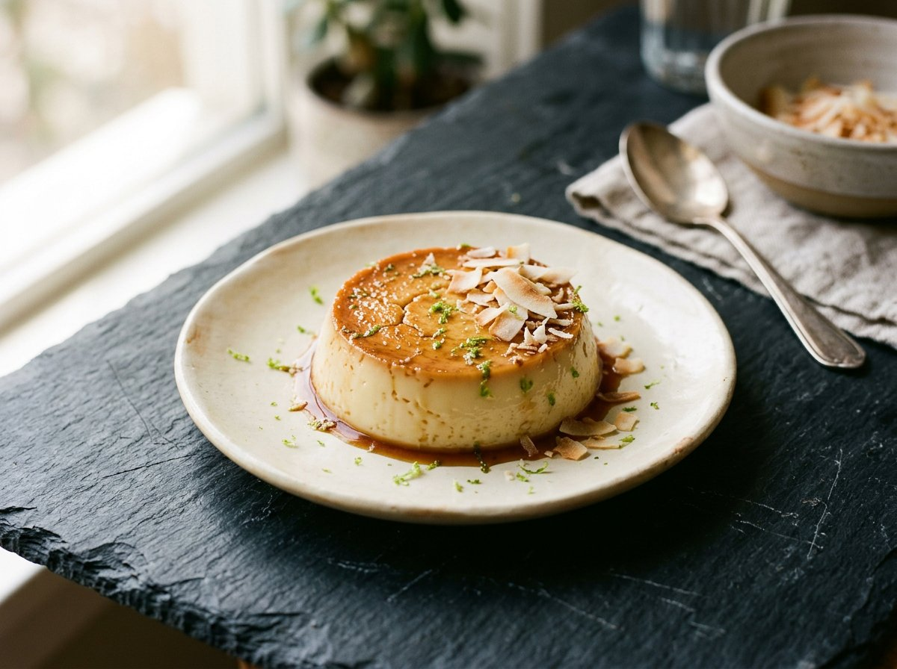
Préparation 12 minTotal 55 minRendement 8Difficulté facile
190kcal / portion6 gglucides8 gprotéines15 gmatières grasses
Ingrédients
- 4 œufs
- 200 ml de lait de coco sans sucre
- 100 ml de crème liquide
- 4 c. à soupe d'érythritol
- 1/2 tasse de noix de coco râpée sans sucre
- 1 c. à café d'extrait de vanille
- 1 pincée de sel
Préparation
- Mixez tous les ingrédients pendant 1 minute.
- Versez dans un moule graissé à l'huile de coco.
- Couvrez de papier aluminium et faites cuire au bain-marie à 180 °C pendant 45 à 50 minutes.
- Laissez refroidir complètement et réfrigérez 4 heures avant de démouler.
CONSEIL DE CUISINE : Le bain-marie est indispensable : sans lui, le flan fait des bulles et prend une texture d'œufs brouillés.
↺ REMPLACEMENT INTELLIGENT : Caramélisez le fond du moule avec 2 c. à soupe de xylitol fondu pour imiter le caramel traditionnel.
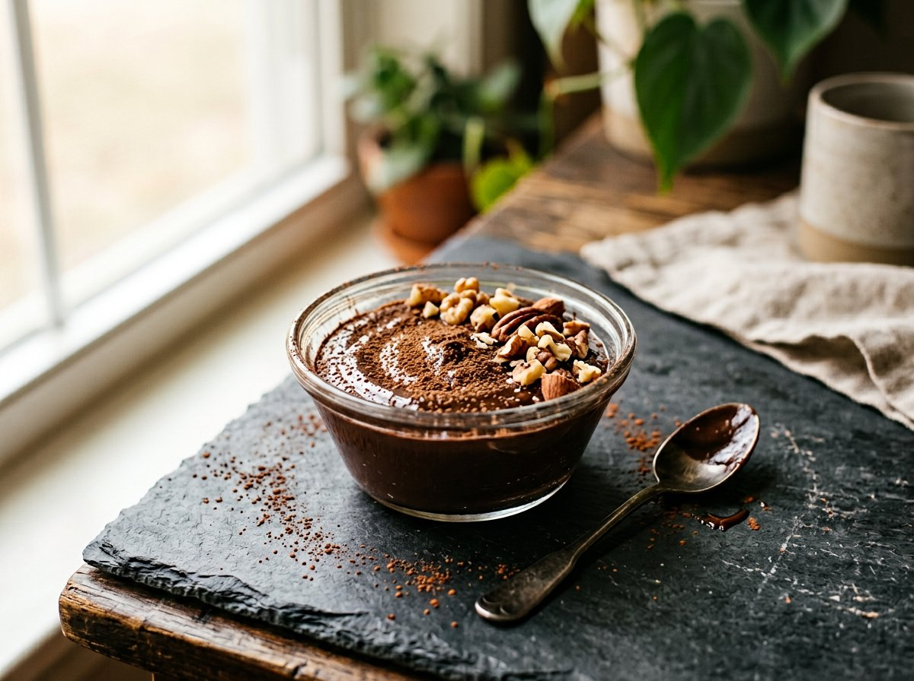
Préparation 8 minTotal 25 minRendement 6Difficulté facile
145kcal / portion6 gglucides4 gprotéines12 gmatières grasses
Ingrédients
- 1 boîte de crème liquide
- 3 c. à soupe de cacao en poudre 100 %
- 3 c. à soupe d'érythritol ou de xylitol
- 1 c. à soupe de beurre
- 1 pincée de sel
- chocolat à 70 % haché pour terminer (facultatif)
Préparation
- Mélangez la crème liquide, le cacao, l'édulcorant et le beurre dans une casserole à fond épais.
- Laissez cuire à feu doux, en remuant sans arrêt, pendant 12 à 15 minutes.
- La cuisson est prête quand la préparation se détache du fond de la casserole en l'inclinant.
- Éteignez le feu, ajoutez le sel, transvasez dans un bocal et laissez refroidir.
CONSEIL DE CUISINE : Les édulcorants à l'érythritol ne donnent pas le même brillant que le sucre : ajoutez 1 c. à café d'huile de coco à la fin.
↺ REMPLACEMENT INTELLIGENT : Pour en faire des boules, réfrigérez 4 heures puis roulez-les dans du cacao en poudre ou des fruits secs concassés.
Préparation 25 minTotal 70 minRendement 10Difficulté facile
285kcal / portion8 gglucides9 gprotéines25 gmatières grasses
Ingrédients
- 1 1/2 tasse de farine d'amande
- 3 c. à soupe de beurre fondu
- 500 g de fromage frais à température ambiante
- 3 œufs
- 1/2 tasse d'érythritol
- 200 g de yaourt nature
- 1 tasse de fruits rouges surgelés
- jus d'un demi-citron et extrait de vanille
Préparation
- Mélangez la farine d'amande avec le beurre et tapissez-en le fond d'un moule à charnière. Faites cuire 8 minutes à 180 °C.
- Fouettez le fromage frais avec l'érythritol jusqu'à obtenir une texture lisse, ajoutez les œufs un à un, puis le yaourt, le citron et la vanille.
- Versez sur la base et faites cuire au bain-marie à 160 °C pendant 50 minutes, jusqu'à ce que les bords soient pris et le centre encore légèrement tremblotant.
- Éteignez le four et laissez le cheesecake refroidir à l'intérieur pendant 1 heure. Couvrez-le des fruits rouges tiédis avec 1 c. à soupe d'édulcorant.
CONSEIL DE CUISINE : Faire refroidir dans le four éteint évite que le centre se fende : le choc thermique est le coupable.
↺ REMPLACEMENT INTELLIGENT : Pas de moule à charnière ? Utilisez un moule classique tapissé de papier cuisson croisé pour pouvoir soulever le cheesecake.
Préparation 12 minTotal 30 minRendement 12Difficulté facile
130kcal / portion4 gglucides4 gprotéines11 gmatières grasses
Ingrédients
- 1 tasse de farine d'amande
- 1 œuf
- 2 c. à soupe de beurre fondu
- 2 c. à soupe d'érythritol
- 1/2 c. à café de levure chimique
- 1/2 tasse de chocolat à 70 % haché
- 1 pincée de sel et vanille
Préparation
- Mélangez la farine, l'érythritol, la levure et le sel.
- Ajoutez l'œuf, le beurre et la vanille et mélangez jusqu'à former une pâte humide.
- Incorporez le chocolat haché et formez 12 boules aplaties sur une plaque tapissée de papier cuisson.
- Enfournez à 170 °C pendant 12 à 14 minutes, jusqu'à ce que les bords dorent.
CONSEIL DE CUISINE : Ils sortent mous du four et durcissent en refroidissant : ne prolongez pas la cuisson en croyant qu'ils sont crus.
↺ REMPLACEMENT INTELLIGENT : Conservez-les 5 jours dans un bocal fermé, ou congelez la pâte déjà formée pendant 2 mois.
Préparation 10 minTotal 40 minRendement 12Difficulté facile
110kcal / portion4 gglucides2 gprotéines10 gmatières grasses
Ingrédients
- 100 g de chocolat à 85 % haché
- 3 c. à soupe d'huile de coco
- 2 c. à soupe de crème liquide
- 1 c. à soupe d'érythritol en poudre
- 2 c. à soupe de cacao en poudre pour l'enrobage
- 1 pincée de sel et quelques gouttes de vanille
Préparation
- Faites fondre le chocolat avec l'huile de coco au bain-marie ou au micro-ondes par impulsions de 20 secondes.
- Ajoutez la crème liquide, l'érythritol, le sel et la vanille, et mélangez jusqu'à obtenir une texture brillante.
- Réfrigérez 30 minutes, jusqu'à ce que la préparation soit assez ferme pour être façonnée.
- Formez des boulettes avec les mains et roulez-les dans le cacao en poudre.
CONSEIL DE CUISINE : Faites fondre le chocolat par brèves impulsions en remuant toutes les 20 secondes : à feu direct il brûle et devient granuleux.
↺ REMPLACEMENT INTELLIGENT : Conservez-les au réfrigérateur : à température ambiante l'huile de coco fond et la truffe perd sa forme.
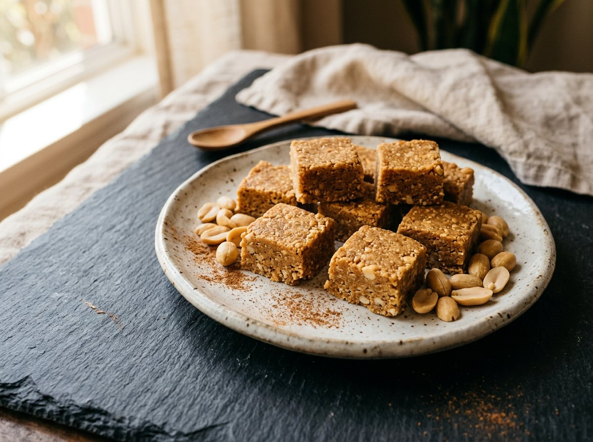
Préparation 8 minTotal 20 minRendement 12Difficulté facile
115kcal / portion4 gglucides5 gprotéines10 gmatières grasses
Ingrédients
- 1 1/2 tasse de cacahuètes torréfiées sans peau et non salées
- 2 c. à soupe de farine d'amande
- 2 c. à soupe d'érythritol en poudre
- 1 pincée de sel
- 1 c. à café d'huile de coco (facultatif)
Préparation
- Mixez les cacahuètes par brèves impulsions jusqu'à obtenir un sable humide : attention à ne pas en faire du beurre.
- Ajoutez la farine d'amande, l'érythritol et le sel, et donnez 3 impulsions de plus.
- Si le mélange est trop sec, ajoutez l'huile de coco et mélangez.
- Tassez le mélange dans de petits moules ou dans un bocal tapissé, coupez en carrés et laissez raffermir 15 minutes.
CONSEIL DE CUISINE : Mixez par brèves impulsions et arrêtez avant : une cacahuète trop mixée devient du beurre et la confiserie ne prend pas.
↺ REMPLACEMENT INTELLIGENT : Conservez-la 10 jours dans un bocal fermé, dans un endroit frais.
Bonus 1 — Menu de 7 jours
Un plan réaliste pour la première semaine : des petits-déjeuners rassasiants, des déjeuners qui deviennent le dîner et une touche sucrée au bon moment.
| Jour | Petit-déjeuner | Déjeuner | En-cas | Dîner |
|---|
| Lun | 01 · omelette au four | 10 + 23 · riz de chou-fleur au poulet | 09 · yaourt et granola | 37 · pizza de chou-fleur |
| Mar | 05 · crêpe de tapioca | 17 · lasagnes d'aubergine | 06 · pain au fromage | 31 · saumon + 44 · mousse |
| Mer | 02 · pain au micro-ondes | 11 · nouilles de courgette | 45 · flan coco | 35 · moqueca de poisson |
| Jeu | 07 · wrap de chou vert | 13 · salade de poulet | 08 · œufs et avocat | 26 · steak aux champignons |
| Ven | 03 · pancakes à la banane | 16 · hachis de chou-fleur | 09 · yaourt et granola | 33 · crevettes à l'ail |
| Sam | 04 · muffins salés | 18 · aubergine farcie | 46 · crème au chocolat | 42 · sushi low carb |
| Dim | 06 · pain au fromage | 30 · travers de porc | 47 · cheesecake | 19 · soupe verte + 28 · steak |
Bonus 2 — Liste de courses de la première semaine
Imprimez cette liste et emportez-la au marché. Elle est prévue pour deux personnes :
- 2 douzaines d'œufs
- 1 kg de blanc de poulet + 8 cuisses
- 1 kg de bœuf haché + 500 g de steak
- 600 g de saumon ou poisson ferme + 400 g de crevettes
- 2 boîtes de thon
- 500 g de mozzarella + parmesan + fromage frais
- Crème liquide
- 2 briques de lait de coco non sucré
- Chou-fleur, courgettes, aubergines, chou et chou vert
- Tomates fraîches + 2 boîtes de tomates pelées
- Avocats, bananes, fraises et citrons
- Oignons, ail, gingembre, herbes et paprika fumé
- Olives, cœurs de palmier, fruits secs et cacahuètes
- Farine d'amande, noix de coco râpée et chia
- Érythritol ou xylitol, cacao et chocolat à 85 %
- Huile d'olive, beurre et huile de coco
- Sauce soja et moutarde
Avant de fermer la cuisine
Vous avez maintenant 50 recettes conçues pour la vraie vie : des ingrédients faciles à trouver, une préparation simple et des restes planifiés. La différence entre cet ebook et une semaine mieux organisée tient à une petite décision : votre prochain repas.
Choisissez une recette pour ce soir, préparez-la et partagez-la avec quelqu'un. Cuisiner à plusieurs donne envie de recommencer.
PROCHAINS VOLUMES DE CUISINE PRATIQUE : Volume 2 — Repas low carb pour la semaine · Volume 3 — Desserts de fête sans sucre.
Arrêtez de recommencer le régime chaque lundi.
Ce livre réunit 50 recettes pour une routine low carb sans cuisiner deux fois : des petits-déjeuners rassasiants, des déjeuners qui deviennent le dîner, des soupes pour les soirées froides et des desserts sans culpabilité.
- 50 recettes complètes avec temps, portions et valeurs nutritionnelles estimées ;
- Conseil de cuisine pour chaque recette ;
- Remplacement intelligent pour adapter les ingrédients ;
- Menu de 7 jours et liste de courses imprimable ;
- Tableau de remplacement pour farine, sucre, riz et pâtes.
Des ingrédients faciles à trouver. Un temps réaliste. Le goût d'une cuisine qui ne ressemble pas à un régime.
CUISINE PRATIQUE